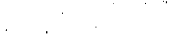
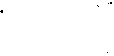

mamasından belli. »
Hennessey : «Bonjur, » dedi. Kuş boncuk gözleriyle yan yan ona baktı. Turuncu bacaklarının üsf:ünde sıçradı. «Garip bacaklı bir papağan. »
Zeke : «Bacağına ne olmuş ?» diye sordu.
- «Ayaklarına bak, kaz ayağı gibi. »
Zeke : « Eh, » dedi. «Ne var yani ? Papağanların
ayağı kaz ayağına benzeyemez mi ?»
Hennessey : «Yüzen papağanların ayağı benzeyebilir ama, o tür papağan olduğunu sanmıyorum. »
- «Belki babası ördekti. » Zeke, o esnada kampı teftişe çıkmış olan Corrigan'a seslendi : «Binba şım . . . »
Corrigan onların yanına geldi.
-· «Ne var o kasanın içinde ?»
--- <;Ben de onun ne olduğ·unu soracaktım. efen-
dim. Biraz papağana benziyor ama . . . »
Corrigan kasanın içine baktı.
- «Nerede buldun bunu ?»
- «Deniz kenarında. Yağa batmıştı. Ona konuş-
mayı öğreteceğim . »
Binbaşı : «Yine yüzmeyi öğretsen daha iyi olur, »
dedi. «Albatros türünden bir kuş bu.»
Zeke : «Alhatros mu ?» diye sordu.
Corrigan : « Evet, » dedi. «Martı gibi bir kuş. »
- «Bin-baş1m.»> Morelli, kantinin köşe:ıi ne koş
tu. «Ziyaretçilerimiz var, bakın. » Denizi g-österiyordu. Küçük bir tekne süratle Adaya yaklaşmakb'ydı.
Corrigan düzlüğe doğnı koştu : «Çab�ık hf·rkesj
toplayın. »
Borazancı yüzmekte olduğu denizden çıktı. Sil
206
kine silkine koştu. Borazanı almak için çadırına daldı. Dizlerinin üzerinde dışarı çıktı. Bir yandan ,ztoplan» borusunu çalarken, hala dizlerinin üzerinde :eftiş alanına doğru yürüyordu. Adamlar ne iş yarıyor larsa bıraktılar. Ruslar ve Amerikalılar koşarak geldiler.
Vorolokov soluk soluğaydı. «Ne var ? Ne oluyor? »
- «Ziyaretçiler . . . Dikenli telin gerisine çek�lin.
Aşağı yukarı savaş halindeymişiz gibi davl·anmalıyız. Bizi o durumda sanıyorlar. »
Vorolokov balıkçı gemisine doğru koştu. A 'iamlarına bağırıyordu. Corrigan: «Kapıyı kapayın, �, diye seslendi. «Füze atıcının üstünü açın. Giyinip siEthlarınızı alın. Hey, sen . . · » Morelli'yi gösteriyordu. «Nöbete, çabuk. »
Bir yandan da, motordakilerin dürbünü olmaması için dua ediyordu. Yarı çıplak deniz piyadeleri bir bir, sürünürcesine çadırlarına girdiler. Tekrar dışarı çıktıklarında, giysiler.ini düğmeliyor, botlarının bağını bağlıyorlardı. Füze atıcının örtüsü birkaç saniye içinde alındı. Ace :
- «Geminin burnuna nişan alın,» diye bağırdı.
«Hey, sizinkini de eski yerine çıkarın. Doldurun şunu. »
Füze kasaları sürüklenerek getirildi. Füzeler atıcıya taşındı. Ace bağırmağa devam ediyordu :
- «Onu kullanmak üzereymişiz izlenimi vermeli. »
Adamlar füze atıcının çevresinde diz çöktüler.
Ace, köprü üzerinde duran Vorolokov'a seslendi :
«Oradan nasıl görünüyor ?»
Rus kaptan «tamamdır» gibilerden baş parm.a
ğını kaldırdı.
- «Mükemmel, fakat tetiğe el atmasınlar. ,>
Hennessey : «Morelli,» diye bağırdı. «Pantolonunun düğmelerini ilikle. Gerçek bir deniz piyadesi 207

gibi görünrneğe çalış. At şu sigarayı ağzından. »
Binbaşı, Zeke'ye : «Kantindeki şişeleri sakla, Zeke, » dedi. «Burası savaş bölgesi. Gerçekten hareket halindeymişiz gibi göl'ünmeliyiz. »
Rus kesiminde, roketin kızıl, konik burnu yine
köprünün yanında belirdi. Tehdit edici bir görünüşle dokuz metre kadar yükseldi. Vorolokov, geminin baş tarafına bir ağır makineli oturttu. Gözcü, kulesine tırmanan Saşa, deniz piyadelerinin kurumağa asılmış çamaşırlarını topladı. Alelacele toparladığı
çamaşırları bir yastık yerine kullanıp, makineli tüfeğin başına oturdu. Tombul Rasputin çöp varilinin başından uzaklaştırıldı. Lev iki kesimi ayıran sınırda, ardında Rasputin'le nöbet tutmağa başladı. Mişa ve Ace, dikenli telden engeli eski yerine ittiler. Kayaların yarığına 'yine metal kazıklar çakıldı. Ace, Mi
şa'ya bakarak gülümsedi.
- «Şimdilik hoşça kal, Mişa. Yine görüşürüz. »
Hızla yaklaşan motorda «Yıldızlar v e Çubuklar»
uçuşuyordu. Şimdi Adaya sadece elli metre mesafedeydi. Corrigan, Ace'e yavaşça : «:Unuttuğumuz herhangi bir şey varsa artık çok geç,» dedi. Sonra, «hey, görevliler,» diye bağırdı, «çabuk kıyıya inip şu motcrdakilere yardım edin. »
Morelli : « Suki, » dedi. «'Şuraya bakın, efendim. »
Corrigan, deniz piyadesinin eliyle gösterdiği yö
�ıe baktı. !riyan Filipinli, Dmitri Kirov'un ip merdiveninden aşağı kayıyordu. Amerikan bayrağını taşıyan motorun yaklaştığını ve Adadaki ani değişikli
ğı gördü. Tekrar tırmanmağa başladı.
Corrigan motorun yaklaşmakta olduğu kıyı par
çasına dönerken, sahra yüz numaralarının birinden
çıkan adamı gördü. İnler gibi :
- « Kutsal ineğin kuyruğu, » diye söylendi.
d'gor ... » Binbaşı adeta paniğe kapılmıştı. «Hennes
Fıey, şu erin kılık layafeti düzensiz. » Elini kolunu sallayar.ak Kazağı gö·steriyordu. « Çabuk adını not et, 208

raporunda bildirirsin. »
Hennessey şimşek gibi harekete geçti. Afallamış,
şaşkın bakınan İgor'u yaka paça yakaladı, ite kaka
mutfak çadırına doğru götürdü. Orada : «Şuna bir
üniforma giydir, Zeke,» dedi. «Göz önünden de uzak
tut. »
Bu esnada motor kıyıya varmıştı. Tipik büytikbaba görüntişlü, dudaklarına profesyonel bir gülümseme takınmış öylece oturan adamın çevresini silahlı Amerikan denizcileri kuşatmıştı. Corrigan'a :
- «Merhaba, » diye seslendi. «Evlatlarımı gör meğe geldim. >.>
«Oh, hayır. Alabama'nın Ateş Topu olamaz,» diye düşünen Corrigan, bunu açığa vermeyen bir tavırla ziyaretçiyi selamladı.
-- «Sizi tekrar gördüğüme sevindim, efendim.»
Senatör Alvin Bernard Courtney Soupe-Senatodaki namıyla Alfabe-genç bir denizcinin kolundan desteklenerek motorun yan tarafından kıyıya atladl.
Geniş adımlarla yürürken tombul elini öne doğru
uzattı. Birkaç adım gerisinden fotoğraf makinesi ta
şıyan bir deniz subayı geliyordu. Deklanşörün kuru
tıkırtılarıyla, Alfabe'nin ileri hatlardaki ziyaretini
resmi kanallardan-Amerikan Basınına iletecek sahneler tespit ediliyordu.
Senatör Soupe, Corrigan'ın elini iki eliyle kavradı. Sonra bir kolunu Binbaşının omuzuna attı.
- «Memlekettekilerin sizleri düşündüğünü bütün çocukların bilmesi gerek. Mükemmel bir iş 'yapıyorsunuz. Bir avuç zorlu Amerikan genci. Hür Dünyaya karşı yapılan meydan okumaya göğüs geriyor.
Sizlerle iftihar ediyoruz. Bana ortalığı gezdil'. Her
şeyi görmek isterim. Herkesi tanımak istiyorum. İleri hatlarda unutulmuş değilsiniz. Memlekete dönünce herkese sizden söz edeceğim. »
Corrigan : «Burada olduğunuza çok memnunuz,
efendim, dedi Sonra memlekette seçim yılının ge-
-
209
f/14


Up çattığmı hatırladı.
- «Sizlerin burada hayli zorlu zamanlar g�irdiğinizi işittim. Çocuklar nasıl karşıladılar?»
Corrigan : «Daima neşeli ve ruhlarındaki çoşkunluk hiç silinmeksizin, efendim,» diyerek gerçeği dile getirmiş oldu.
- «Ya kızıllar ?»
- «Bizi pek uğraştırmalarına fırsat vermedik.
Bir bakıma, şişeye kapatılmış cin durumundaydılar. »
- «Mükemmel, mükemmel. Sınır bur.ası mı ? Şu
da bir Rus mu ?» Senatör, tekrar eski yerine çekilmiş olan dikenli telden çiti işaret ediyordu.
Nöbet tutan Lev ters ters baktı. Zinciri çekip
tombul Rasputin'i ayağa kaldırdı. Geri planda duran
Zeke'yi gören köpek ileri atılır gibi yaptı. Lev de aynı anda onun yerine havladı. Senatör Soupe :
- «Aman Tanrım,» dedi. «Düpedüz bir canavar
bu. »
- «Gerçek bir kaatil, efendim. Bir gece Teğmene çadırında saldırdı. Onunla başetmek için çekmediğimiz kalmadı. Ertesi sabah dikenli tele kadar kan izleri görünüyordu. O günden beri mesele çıkarmadı. » Bunları söyleyen Corrigan, dikenli telin öte tarafındaki Lev'e göz kırptı, Deklanşörün tıkırtıları şimdi daha tekdüze bir hal almıştı. Sadece fotoğrafları çeken subay makarayı çevirirken kesiliyordu.
Silahını kuşanmış Morelli dikenli telin yanındaydı. Çaktırmadan ciklet çiğniyor ve bir kurşun askerin çizgileri alabildiğine keskin, katı 'yüzüyle sınıra doğ·
ru bakıyordu. Soupe :
- «Uzun süreden beri mi nöbette, asker ?» diye sordu.
- «Bütün gece nöbet tuttum, efendim. Öte taraftakiler tek durmuyorlar.»
- «Mükemmel, mükemmel . » Soupe, fotoğrafçıya
döndü «Bu erle birlikte benim bir resmimi çekin. »
Tekrar Morelliye baktı. «Seni tanıdığıma memnun ol-
210


dum, evlat, dedi. Deniz piyadesinin elini sımsıkı kavradı ve fotoğrafçıya poz verdi. Göbeğini içeri çekmiş, uçuk mavi, ince kumaştan ceketinin önü iyice gerilecek şekilde göğsünü ileri vermişti. Deklanşör bir kez daha tıkırdadı.
Soupe : «Bana her tarafı göster, » dedi. «Görme ·
diğim bir şey kalmasın. »
Corrigan, onu Hennessey'in bir mangaya eğitim
yaptırdığı alana götürdü. Hennessey gürlüyordu :
- «Sol, sağ, sol, geri dön. Sol, sağ, sol, ge--rli
dön. Sol, sağ, sol, ge-rii dön. » Adamlar üç yönde
dokuzar adım atarak, minyatür eğitim alanını fır
dönüyorlardı. Hennessey, «Çok Önemli Kişi»nin yaklaştığını görünce, «Silah omzaaa,» diye bağırdı.
Adamların hali gerçekten etkileyiciydi. Nitekim Soupe de duygulanmıştı.
- «Mükemmel, mükemmel. Daha iyisini görme -
miştim. »
Corrigan : «Teşekkür ederim, efendim, » dedi.
Soupe : «Portakal rengi çadır nedir ?» diye sordu .
Corrigan becerebildiği kadar ciddi görünmeğe
çalışarak :
- «İngilizler,» dedi. «Güvenlik gereği. Dış�rı
çıkmalarına pek müsaade edilmiyor. Onları sık görmeyiz. Çoğunluk çadırlarında kalırlar. Burada iHke lerini temsil ettikleri söylenebilir. «Rhodes'in ortalıkta boy göstermemesi için dua ediyordu.
Hulmkçuyla Collins'in kahvaltıda çok içtiklerini biliyordu.
Corrigan Senatörü Kantine doğru götürmek üıtedi ama, Soupe Amerikan kesiminde tam bir tur a t nıak icin diretti. Roket atıcıvı inceledi. Sahra yüz
numar;,sı bölmelerinin hepsine bir bir girip çıktı. Sı-·
rn sıyla bütün sifonların zincirini çekti. Dizlerinin üstünde birer kişilik çadırlara girdi ve aynı şekilde geri geri çıktı. Fotoğraf makinesi durmaksızın çahşlyordu. PX'.e hayran kaldı. Corrigan her nasılsa or-211


tada kalmış bir Rus dürbününü kaşla göz arasmdaona çaktırmaksızın-bir tezgahın arkasına sokuşturu ·
verdi. Buradan çıkan Senatör mutfak çadırına yöneldi.
Corrigan ürpertiler geçirerek İgor'u hatırladı.
Bir kez daha Senatörü kantine sokmağa çalıştı ama,
yine başaramadı. Başını mutfak çadırı 'yönünde sallayan Soupe : «Ahçıyı görmek istiyorum,» dedi.
Binbaşı son bir umutla :
- «Konuşmanız için onu dışarı çağırtayım,» :tiye önerdi.
- «Hayır, çalışan bir adamı işinden alıkoymak
istemem,» diyen Soupe içeri girdi.
Mutfağın dip tarafında bir taburede İgor başt
önüne eğik oturuyordu. Önündeki kocaman bir yı
ğından aldığı patatesleri kendine has bir usulle, bir
saldırmayla soyup doğruyordu. Bir patates seçti lres ·
kin s1rtlı, acımasız bıçağının önünde tuttu. Altı vuruşla düzgün bir küp biçimi verdi. Etli kabukları özenle yıkadı ve yanında duran malzeme mayalama
kabına koydu. Sadece yemek için kullanılacak her yüzü kare biçimindeki patatesler çevresine dağılmıştı.
Bunların durumuyla pek ilgilenmediği açıktı.
Kazağın sırtında uzun boylu Kentucky'li ahç1-
nın savaş giysilerinden biri vardı. Zeke1nin çelik miğferi hemen hemen İgor'un omuzlarına kadar düş ·
müştü. Ayaklarım botlardan çıkarması için onların
bağını çözmesi gereksizdi. Garip görünüşlü yaratı
ğın önünde dikilen Zeke onu gözden gizlemeğe çahştı.
Soupe : «Ahçı sen misin ?» diye sordu.
- «Evet, efendim. »
Soupe dikkatle ona baktı : «Ne taraftansın,
oğul ?»
- «Kentucky, efendim. »
Senatör, Zeke'nin kaburgalarına şakacıktan hir
dirsek attı.
- «Mehtap Suyu yapıyor musun, oğul ?»
212


Zeke 'yutkundu. «Başka bir şey yaptığım yok,
efendim »
Senatör, Corrigan'a döndü.
- «Benim Güneyli aslanlar böyledir işte. Tekmil Birleşik Devletlerde mizah duygusu en güçlü kimseler onlardır. » Binbaşı gönülsüz gönülsüz dişlerini gösterdi. Soupe, Zeke'nin ardında sinmiş gibi du ·
ran İgor'u işaret etti. « Ü kim ?»
- «Ü mu? .. Şey o . . . » Corrigan şöyle bir düşüncfü, bir isim hatırlamağa çalıştı ama, kıvıramadı.
«Corrigan,» diye kestirip attı.
Soupe : «Corrigan senin adındı ama,» dedi.
Corrigan başını salladı.
- «Evet. » Kafasının içi karmakarışıktı. Savaşta asla paniğe kapılmamıştı. Şimdi bir mutfak çadı ·
rmda kapılıvermişti işte. «Ü şey . . . Benim teyzem, yani halam . . . Halamın çocuğu. Yeğenim, efendim. » Biraz olsun rahatlamış gibiydi.
Soupe : «Üoo, burada adam kayırmak diye bir
şey yok besbelli\» dedi . «Her bakımdan kusursuz, demok:ra tik bir birliğin başındasınız, Binbaşı. Buraya gel bakalım, oğul.» İgor'a sesleniyordu. « Küçük adın
ne, evlat ?»
İgor : «İgor, » dedi.
- «Garip bir ad. »
İgor yan yan baktı.
- «Mozdok çevresindeki erkeklerin çoğu İgor
adını taşır. »
- «Mozdok mu ? »
Corrigan hemen atıldı.
- «Evet, efendim New Jersey yöresindeki Mozdok . »
Soupe : «Bazı Yanki'lerin şivesi insanı şaşırtı·
yor,» dedi.
Corrigan Senatör'ün koluna dokundu ve başıyla
kapıdan tarafı işaret etti. Soupe onunla birlikte dı
şarı çıktı. Orada, Corrigan :
213


- «Özür dilerim, efendim, » dedi. «Gördüğünüz
er bizim tek kaybımız. Savaş atmosferinin etkisiyle
bu hale geldi. En tehlikeli görevleri gönüllü olarak
kabullenmişti. Sinirleri yıpranmış. Ergeç eskisi gi
bi konuşabileceğine inanıyoruz. Çok cesur bir çocuktur. »
Soupe'un ilgisi büsbütün koyulaşmıştı.
- «Çok zayıf göründü bana. »
Corrigan : «Evet,» dedi. «İlk geldiğinde aynı
üniformayı nasıl dolduruyordu görecektiniz. Halen
ağ·zına lokma koymuyor. Onu mutfakta görevlendirerek yeni bir tedavi yöntemini uyguluyoruz. Zeke onunla ilgileniyor. »
Senatörün gözleri çoşkulu bir vatansevterlikle
parlamıştı.
- «Onun için bir madalya verilmesini önerece··
ğim. » Corrigan: «Hayır, hayır,» diye· atıldı. «Bunu
yapmayın. Her şeyi mahvedersiniz. Demek istediğim,
madalya ona savaşı hatırlatacak. Uyguladığımız tedavi boşa gidebilir.»
Soupe : «Öyleyse beraberimde götürürüm,» dedi.
«Başkan onunla tanışmak isteyecektir. Televizyona
çıkarırım. Milli bir kahraman olur. En iyi tedaviyi
görmesini sağlarım. Öz oğlum gibi bakarım, bundan
gurur duyarım. »
Corrigan n e diyeceğini şaşırdı. İgor'un Birleşik
Devletlerde yaratacağı karışıklığı görür gibi oluyordu. İgor'un Başkanla karşılaşmasını, İgor'un televizyon ekranında görünmesini. Birleşmiş Mil-letler Genel Kurul toplantısında yaptığı konuşmayı, sosyete toplantılarına katıldığını ve İgor'un masaların üzerinde dans ettiğini düşündü. Buzdan bir bıçak yutmuş gibi midesine kramp girdiği için, düşüncelerinin bu yönde dolu dizgin akıp gitmesini önlemeğe çalıştı. Senatörün çoşkunluğuna set çekmenin bir yolunu bulması gerekiyordu.
214


- «Bana inanın, efendim. Burada arkadaşlarının
yanında olması onun için daha iyi. Biz huyunu su
yunu biliyor, ona en iyi şekilde bakıyoruz. Üstelik
ona ihtiyacımız var. Tez zamanda eski halini alması�
nı isteriz. »
- «Hayır, ısrar ediyorum. B u çocuğun fedakarlıkları memlekette nasıl bir moral güçlendirme aşısı olacak, düşünsene. » Büsbütiüı çoşan_ Senatörün gözleri nemlenmişti. Sesi titriyordu. Corrigan başka bir çareye başvurdu.
- «Benim yeğenim oluyor. Senatör. Lütfen bu
işi bana bırakın. »
Senatör Soupe, yeniden seçilmesi için eşi benzeri bulunmaz bir fırsat yakaladığına karar vermişti.
!gor'a, yüzde yüz yeniden senatör seçilmesini sağlayacak, bu yolda 'yararlı olacak bir reklam unsuru gö züyle bakıyordu.
- «Fakat düşünsene, Binbaşım. Bu olayın her ·
kes tarafından bilinmesi deniz piyadelerine neler sağlayacaktır. »
- «Çok iyi biliyorum, Senatör.»
- «Öyleyse neden benimle gelmeyi isteyip iste-
mediğini sormak fırsatını bile vermiyorsun?» Corri
gan'm bir şey söylemesine kalmadan, Senatör «İgor,
İgor Corrigaİı, » diye bağırdı,
İgor ayağını sürüyerek dışarıya çıktı. Senatör
yumuşak bir sesle :
- «Dinle, evlat,» dedi. «Amerika'ya gelmek is-
ter mi'ydin, benimle beraber . . . »
İgor'un gözleri parlamıştı.
- «Da, » diye karşılık verdi. « Çok isterim »
- «İşittin mi, Binbaşım ? Bana 'dayı' dedi. »
Corrig.an durumu kısa zamanda böylesine gelişmesinden, hiç ummadığı bir safhaya dökülmesinder.
şaşırıp kalmıştı. Geçit alanında apoletlerinin, r'füğ·melerinin söküldüğünü, kılıcının geleneksel şekilde başının üstünde kırıldığını görür gibi oldu. Kaç
215

kuşaktan beri askerlik kanına işlemiş olan aile�lnh
adına leke düşürecekti. Albay babası üye olduğu briç
kulübünden çıkarılacaktı.
Soupe onun hayatının kararmasıyla ilgili düşün
celerden tamamen habersiz, kendi dalgasında :
- «Bu delikanlıyla birlikte sınırda bir resim
çektirmeyelim,» dedi. İgor'un koluna girdi ve a�ır
adımlarla dikenli tele doğru yürüdü. Mutfak kap!Sl··
na çıkmış olan Zeke ağzı açık bakakalmıştı. BU.tün
birliğin geleceğini tehdit eden kara bulutu hemeıı se
ıinledi. Hiç gecikmeksizin karar vermek gerekiyordu.
Kendi durumlarının sarpa sarmasındansa, İgor'u har-·
camak yeğdi.
Soupe fotoğrafçıya döndü.
- «İri yarı, zorba görünüşlü şu Rusun da gr�ri
planda görünmesini sağlamağa çalış. » Böyle söylerken, mavi bir işçi tulumu giymiş, Rus kesimındeki n varımda duran Suki'yi gösterdi. Suki dalgın
dal�m, kolunun altına kıstırmış olduğu Rus yapısı
hafif makinelinin mekanizmasıyla oynuyordu.
Deklanşör bir kez daha tıkırdadı. Fotoğrafçı :
«Bir poz daha çekelim,» dedi. İgor'un yüzü ayın ondördü gibi şavkımıştı.
Soupe, çaresiz, yenilgiyi kabullenmiş Binbaşıya
döndü :
- «Vay canına. Şuradaki gibi çirkin, ürkütücli
bir maymunun karşısında dikilip onu gözlemek zo.
runda kaldıkları için, adamlarına çift maaş vermeleri gerek. » Dikenli telin öte yanındaki Amerikan deniz piyadesi eri Suki'yi işaret ediyordu.
Binbaşı Corrigan bo.ş gözlerle Filipinli'ye haktı.
Yüksek sesle :
- «Haklısınız,» dedi. «Ü adam anadan doğma
belalının teki. Hele gözlerine bakın. Birbirine ne kadar yakın, değil mi ? Elimin al tında olsaydı, yüzün.
den o çirkin sırıtmayı kazımak için ne yapacağımı
bilirdim. »
216

Zeke, İgoru mutfağa çağırdı. Başlarında Bin
L m;ıı olmak üzere birliği kurtarmak için tek çare
olduğunu düşünmüştü.
- «Şu adamı memnun etmek ister misin, İgor ?»
diye sordu.
-- «Da. »
- «Öyleyse seninle konuştuğu zaman, ona 'tüın
başkaldırıcı Güneyliler su katılmadık piçsoyudur'
dersin. Tamam mı ?»
İgor onun söylediklerini tekrarladı. Zeke başını
salladı.
- «Mükemmel. »
.İgor, sınır yakınındaki Senatörle Corrigan'ın yanına döndü. Kentucky'li mutfak çadırının kapısından onları gözetliyordu. «Hatfield Dedeciğim, böyle davranmak zorunda kaldığım için beni bağışla,» diye
mırıldandı.
Sonra dikkatle kulak kesildi. Fazla beklemedi.
Kasıntılı, saygıdeğer ziyaretçi, yüksek sesle zehir
zemberek bir küfür sallamıştı. Ardından Corrigan ba
ğırdı :
- «Çavuş Hennessey, » Hennessey koşarak Binbaşının yanına gitti. Hala gülümseyen İgor'u gösteren Corrigan, «Bu eri tutukla,» dedi. «Götürüp hücreye kilitle. Gözüm görmesin onu. Otuz gün kilit altında kalacak. »
Hennessey, şaşırmış olan Kazağı portakal rengi
çadırn doğru çekip götürdü. Soupe : «Biraz fazla sert
davranmadın mı, Binbasım ?» dedi. «Ne de olsa durumunu unutmamak ge;ekirdi. »
Corrigan bu fırsatı kaçırmak niyetinde değildi.
- «Her zaman böyledir, » karşılığını verdi. «Sizi uyarınağa çalıştım. Güneylilerden nefret eder.
Her fırsatta hakaret eder onlara. Doğrusunu isterseniz hale yola gireceğini sanmiyorum. Annesi hamileyken 'Rüzgar Gibi Geçti'yi okuyup korkmuş. Belki de omm etkisidir. Yeğenim olduğu için üzg.ünüm ama,
217

bunu değiştirmek elimde değil . »
Soupe : «Yazık, » dedi. «Ünun ıçın çok şey yapabilirdim. » Seçim kampanyası için kaçırdığı fırsata yanıyordu.
Senatörün ziyaret görevi sona ermişti. Yemeğe
kalması için yarım ağızla söylenenleri :
«Vaktim
yok,» diye karşıladı. «Filoya dönmem gerıekiyor. »
Ansızın, buradan gitmek için dayanılmaz bir isteğe
kapılmıştı. Zeke'ye, <�b�r sandöviç bana yeter,» dedi.
«Sizlerin oyalanıp eğlenmenizi sağlamak için bir şeyler yr\'"lmağa çalışacağım. »
Zeke sandöviçleri getirdi. Sandöviçleri alan Senatör kıyıdaki tekneye yöneldi. Oradakilerin yardımıyla bindi. Motor açılırken, sandöviçleri tutan elini Oorrigan'a doğru salladı. «Mükemmel, mükemmel.
Temiz bir iş yapıyorsunu..z, çocuklar. »
Keskin bir çığlık, ardından Senatörün öfkeyle
bağırdığı duyuldu. Topal martı Cedric havada akrobatik bir dalış yapmış, sandöviçten taşan jambonu kaparak boş ekmek dilimlerini Senatöre bırakmıştı.
Motorun gürültüsü, Güneyli ağzıyla savrulan küfürleri bastırdı.
Corrigan Zeke'ye döndü.
- «İgor meselesinde yardımın için teşekkürler,
Zeke. Bize çok yararlı oldun. Bir şerit daha takın.
Seni çavuş yaptım. »
Zeke gülümsedi. Dedesinin anısına karşı saygısızlığı bedelsiz kalmamıştı.
Kraliyet Sarayının kristal avizeli Taht Salonu
cereyanlı:ydı. Hafifçe ürperir gibi olan Kraliçe, kol
ağızları ve yakası ermin kürklü pelerinine biraz daha
sıkı sarındı. Başbakan konuşuyordu.
Başbakan, bataryayla çalışan Japon yapısı televizy<m cihazının yirmi santimlik ekranından Krali
çeye bakıyordu. Şu anda alıcı cihazlardan hangisine
bakarak konuşması gerektiğini kestirememiş, işi tamamen tesadüfe bırakmıştı.
218

-- «Çocuklarım . . . » Sonra hemen düzeltti. «Dün
ya halkı, eee . . . İngilizler, hepinizin du'ymuş olduğun
dan ştiphem yok. » Piposunun sapıyla alnını kaşır gi
bi yapınca, yüzüne üçüncü bir kaş çekmiş oldu.
«Kaktüsünün ölmüş olmasından. . . Eee, yani Bozkaya'daki tehlikeli durumdan söz etmek istiyorum. Bu durumun sorumluluğu tamamen Ruslara, hatta Amerikalılara ait. » Bir an sustu, ardından «elektrikli traş makinesiyle dikenlerini traş ettikten sonra onbiri de öldü. Durum çok kritik. Muhalefetin on üç yıllık davranışını, hippileri ve tüm sorumsuzları suçluyorum, » diye devam etti.
Bakımlı, bol tüylü bir köpek televizyon cihazını
alıp salondan çıkınca, Başbakanın k_onuşması da duyulmaz oldu. Kraliçe, kocasına:
- «Nereye gitti ?» diye sordu.
- «Bahçeye götürmüştür. Başbakan konuşurken
televizyon cihazlarını götürüp bahçeye gömüyor.»
- «Bu konuda bir şeyler yapmalıyız. »
Kraliçenin eşi : «Evet, » dedi. «Doldurulup Tabiat Tarihi Müzesine hedi'ye etmenin zamanıdır sanıyorum. »
Kraliçe sevgiyle gülümsedi.
-- «Ne laf anlamaz şeysin. Başbakandan söz
ediyorum. »
Kocası : «Ben de, » karşılığını verdi.
14
Adalılarla dış dünya arasındaki radyo haberleşmesi çok azdı. Alıcı-verici cihazın tam bir suskunfuğ·a gömüldüğü günler birbirini izliyordu.
Kayaların çevrelediği, suyu dupduru bir havuzcuğun kenarında karnının üsti.ir.e yatmış olan Clancy, deniz bö�eğini se'yre<llyordu. Böcek de seyre değerdi
219

hani. Clancy onun dünyadaki en büyük denizböceği
olduğunu düşündü. Onun sayesinde seksen beş içki
puanı kazanıyordu. Victoria onu 'Haftanın Deniz
Böceği' seçmişti. Ağırlığ1 Hennessey'nin kara canavarınkini bile aşmıştı.
DenizLöceğı avı sabahın boş saatler.ini değerlendirmek için ucunda bir şeyler de olan bir spordu.
Adamların ıslak kayaların üzerinde buldukları küçük
deniz salyangozları Amerikalı erler ve Rus balıkçılar
tarafından balık yemi olarak kullanılıyor, İngilizler
de çay saati çerezi diye yararlanıyorlardı. Onları yarıştırmağa kalkışmış, fakat bunda başarı sağlayamamışlardı. Özenle, milletlerarası yarışlara katılan otomobillerin rengini piste sürmüşlerdi ama, deniz
salyangozları bu konuda işbirliği yapmağa yanaşmamışlardı. Kayaların çevrelediği durgun havuzcukda saatlerce hareketsiz kalmışlardı. Bunu görünce, hayvancıkların büyüklüğü üstüne kumar oynamağa başlamışlardı. Haftanın en büyük böceğini tutan, silip süpürme işine hak kazanıyordu.
Clancy'nin böceğe karşı olan duyguları adeta babacaydı. Parmağıyla yavaşça dokundu. Hayvancık siyah gövdesinin sadece ucu görünmecesine kabuğunun içine çekildi. Clancy onun karanlıkta keyifle gülümsediğini hayal etti.
Ace : «Al bakalım içki puanlarını,» dedi. «Tencere de burada. »
Kazanan deniz böceği kaynar suya ilk önce atılmakla onurlandırılıyordu. Böylece hile yapmak olanağı da kalmıyordu. Aynı deniz böceğiyle iki kez kazanmanın yolu yoktu. Kaybeden oyuncular kenarda dikilip acılı töreni izliyor, sonra kendi salyangozlarını
da tencereye atıyorlardı.
Clancy deniz böceğini baş ve işaret parmaklarının arasında tuttu. Böcek iyice kabuğuna çekildi.
Simdi sadece boynuzları görünüyordu. Fıkara, kabu
ğunu kale sayıyordu anlaşılan.
220


Clancy hoşnutsuzlukla : «.Kazanmak istemiyorum,» dedi. «Böceğimi muhafaza edeceğim. »
Ace : «Ne demek istiyorsun ?» diye sordu. «Burada seksen beş puan var. Sen kazandın_ Kazandıklarını almalısın.»
- «Onları Hennessey'e ver. »
Clancy, deniz böceğini şefkatle, titiz bir dikkatle
deniz kenarına götürdü. Su koltuk altına gelinceye
kadar yürüdü. ·şaşkın Ruslar ve Amerikalı kumarbazlar onun kolunu geriye doğru yukarı kaldırdığını, sonra böceği fırlatıp uzaklara attığını gözlediler. Hayatından hoşnut bir edayla kıyıya döndü.
- «Elimden gelmedi,» diye özür diledi. «Yabancılarla mesele yok ama, bununla bayağı ahbap olmuştuk. »
Radyodan gelen ses onu sıkıntılı durumundan
kurtardı. Çadıra girdi ve kızarmış yüzüne kulaklığı
takındı. Kapıya doğru : «Binbaşıyı çağırın, » diye
seslendi.
Corrigan adamlarına : «Posta, ikmal ve özel bir
paket,» dedi. «Patron, bir çıkarma teknesinin yolda
olduğunu söyledi. »
Deniz piyadeleri «hurraaa» diye bağrıştılar.
Ada'ya gelip yerleştiklerinden beri ilk postaydı bu.
İkmal ve özel pakete gelince, başlarının üstünde yeri
vardı. Corrigan, Ace'e :
- «Git Uşa'yı uyar,» dedi. «Başka ziyaretçilerin
yolda olduğunu söyle. Hiç değilse bu. kez önceden
haber verdiler. Çıkarma gemisi gidinceye kadar
İgor'u zincire vurmayı unutmasınlar. »
Adadakilerin ziyaretçiler için hazırlanması, bu
kez kolay oldu. Telaşa, kargaşaya meydan kalmadı.
Corrigan adamları topladı. Herkes ziyaretçileri kar
şılamak için gereğince hazırdı. Corrigan :
- «Tamam, » dedi. «Çavuş Hennessey, her çadırı ve barakayı kontrol et. İgor'dan iz, eser olmasın.
Onunla uğraşmak beni hastalandırıyor. »
221

Çıkarma teknesi Adaya vardığı zaman, herkes
görenleri etkileyecek-sözüm ona savaş havasını tam
anlamıyla hissettirecek-bir düzenle onları karşıladı.
Gelen teknede Adadakilerin birliğinden kimseler vardı. İçlerinden biri: «Burada işler nasıl, Morefü? »
diye seslendi.
- «Ün numara. Ne zaman kıyasıya girişeceğiz
belli değil. Oralarda borç para verecek kimse var
mı ?»
Suki de bağırarak konuşmaya katıldı : «Şu gemiyi görüyor musunuz ?» Rus balıkçı gemisini gös·
teriyordu. «Hele şu kocaman rokete bakın. Nükleer
bir bebek. Kızılın biri düğmeye basıversin, tamam.
Yirmi mil öteden ses getirir. Önce yükseliyor, sonra
elleriyle koymuşlar gibi ense kökümüzde. »
Suki'ye posta torbasını atan erlerden biri :
- «Vay canına,» diye söylendi.
Traşlı çenesi mavimsi bir deniz pi'yadesi :
- «Burada bütün gün güneşte yan gelip poponuzu büyüttüğünüze bahse girerim,» dedi.
Clancy : «Sen öyle sanırsın, » diye karşılık verdi.
«Yirmi dört saat nöbet, silahlı eğitim, günde Hç kez
tam teçhizatla geçit, her sabah teftiş, karavana dersen havagazı. Balık yemekten midemiz denize döndü.
Nereye gidersen git, elli metre ötende bir subay. Yerini seninle değişmeğe hazırım. »
Morelli : «Tam bir sinir savaşı, » dedi. «Rm:ılar
bir an tek durmuyorlar. Nereye gitsen bir sill\lıın
atış alanın dasın. Dur durak yok.»
Çıkarma gemisinden bir ses g.eldi :
- «Sevgililerim benim.»
Suki, Hennesse'y'e baktı.
- «Garip şey. Şubedeki sağlık kurulları gittik
çe dikkatsizleşiyor. »
Aynı ses : « Eşyamı taşımak için yardım eder misiniz, yakışıklılar ?» dedi.
222


Bu kez, Hennessey Suki'ye döndü.
- «Benim duyduğumu sen de duydun ml'. ? »
Filipinli başını salladı.
- «Ne olursa olsun çadırımı onunla bölüşecek
değilim. »
Ses bir kez daha duyuldu : «Hadi aslanım. beni
kollarında kıyıya çıkar da sana esaslı bir öpücük vereyim. »
Hennessey öfkeyle bağırdı : «Şu tatsız oyunu :kes
artık, deniz piyadesi. Burası savaş bölgesi. Eşyanı
kendin taşı. » Sonra kıyıdakilere döndü. «İkmal malzemesini boşaltın, çabuk tutun elinizi.»
Çıkarma teknesinden garip görünüşlü bir deniz
piyadesi çıktı. Ooraigan gözlerini kısarak, dikkatle
baktı. Klasik bir kadın yapısına. sahip olan bu kimse, bir deniz piyadesine benzemekten çok uzaktı Deniz piyadelerinin giydiği savaş elbisesi, 90-52-88 öl
çülerindeki vücudun dolgunluklarını, yuvarlak çizgilerini olduğu gibi belli ediyordu. Savaş elbisesi çok olgun, ballanmış, dalından düşmek üzere olan bir
meyvanın çatlamış kabuğunu andırıyordu. Tüniğin
düğmeleri hemen hemen beline kadar çözüktü. Kırmızı dantel sütyenin görevini yerine getirdiği söylenemezdi.
Seyahat çantalarını yere bırakan deniz piyadesi
giyimli dişi :
- «Hay aksi şeytan,» diye söylenerek onlarJan
birinin üstüne oturdu ve kırılan bir tırnağını incele ·
meğe koyuldu.
Corrigan : «Saf duuuur,» diye bağırdı.
Kayalara sürtünen savaş botlarının çıkardığı
ses, onun sesinin yankısını bastırmıştı. Adamlar
özentili, göstermelik, kasıntılı pozlarıyla, gülünç bi\•
heykeller dizisi meydana getirmişlerdi. Corrigan hakiki renk heykellerin arasından ilerledi.
Önüne geldiği zaman, genç kadın uzun, ı._Şıfülı
bakır rengi saçlarını başının bir hareketiyle geri
223


attı. Başını kaldırıp ona baktı. Gözleri trafik lamba·
sı yeşiliydi. Titreşen kirpikleri «geç» işareti veriyor·
du. Tatlı tatlı gülümsedi.
- «Benim adım Dreamy. »
Corrigan : «E . . . Evet,» diyebildi.
- «Dreamy Knights. »
Heykeller değişik tonlarda inlediler. Dreamy :
- «Gösteri yaparım,» diye devam etti.
Bir düzine ses aynı anda :
- «Üna ne şüphe,» dedi.
Corrigan : «Boşaltma işine yardım edin,» emrini
verdi.
İnsanın kalbinde gezinen bir kuştüyü izlenimi
veren ses :
- «Binbaşı Corrigan siz misiniz ?» diye sordu.
«Size bir mektubum var.» Ses o kadar yumuşaktı ki,
Binbaşı Corrigan onu işitebilmek için öne doğru eğilmek zorunda kalmıştı. «Buraya görevli olarak gel·
dim. »
Corrig.an gözlerini takılıp kaldığı yerden güçlükle kurtarabildi. Genç kadın onun eline bir zarf tutuşturdu. Zarfın içinde Senatör Soupe'dan bir nıeşaj vardı. Bir seçim beyannamesinin arkasına çiziktirilmişti : «Çocukları unutmayacağıma söz vermiştim. Konukseverliğiniz için teşekkürler. Sizler için ne yapılsa azdır. Bob Hope'un gönderilmesini söyledim. »
Corrigan soran gözlerle kadına baktı. Parfümün kokusu onu fena çarpmıştı. Bir girdaba kapılır gibi olduğunu hissetti.
Dreamy : «Çok müteessirim,» dedi. «Bop Uzak
Doğu turuna çıktı. Onun için benimle yetinmeniz gerekiyor. »
Corrigan yutkundu.
- «Yetinmem mi ? Şey, yani bizler için zahmet
edip geldiğinize çok sevindik. »
Çıkarma teknesi kıyıdan açılmak üzereydi. Deniz piyadeleri bağrışarak veda ettiler. Baş taraftaki 224
bir deniz piyadesi, mahzun bir ifadeyle : «Tekrar görüşeceğimizi umarız, » diye seslendi.
Morelli : «Her gelişinizde bize böyle bir paket
getirin,» karşılığını verdi.
Corrigan kızı Kantine kadar bizzat götürdü. Seyahat çantalarını taşımak için millet birbirine girmişti. Hennessey : «Ne yapacak acaba ?» diye sordu.
Dreamy yeşil gözleri'yle onlara baktı. Kalçaları-
nı oynattı.
- «Şarkı söyleyip dansederim, Çavuş. »
Deniz piyadeleri : «Vooooov, » diye bağrıştılar.
Corrigan elinde olmaksızın sordu :
- «Uzun süre kalacak mısınız ?»
Dreamy baygın baygın g.ülümsedi.
- «Bana ihtiyacınız olduğu süre. »
Oybirliğiyle ve kelimelere dökülmeyen bir anlaşmayla, yeni gelene Adadaki gerçek durumu açıklamamanın daha emin bir davranış olacağına karar verildi. Nöbetçiler yerlerini terkettiler ama, herkes üniformasıyla kaldı. Taraflar iki kesimi ayıran dikenli telden öteye geçmediler. Konuğa karşı takınılacak
tavrı kestirmek kolay değildi . Onu gereğince ağırlamak için bazı hazırlıklar gerekiyordu. Victoria büyük bir fedakarlıkta bulundu. Albert'i uyuduğu bölmeden
çıkardı. Albert, İgor ve Saşa'nın nazik çağrısını kabullenip, Dınitri Kirov'daki kabini onlarla bölü� tü.
Morelli, kantindeki piyanoyu cilalamak ve temizlemek için birkaç saat harcadı. Yüksek tonda notalardan çoğu ses vermiyordu. Tuşlardan bazılarının fildişi kaplaması kalkmıştı, fakat piyanonun akortuna diyecek yoktu. İlk denemeyi, kulağı tonaliteye sa
ğır olan Hennessey yaptı ve «tamamdır» diyerek sonucu açıkladı. Amerikalılar ve İngilizler, haftalardan beri ilk kez kantinde bir arada yemek 'yediler. Zeke,
uzun masanın çevresinde sadece yirmi iki sandalyenin olmasına özellikle dikkat etti.
Dreamy piyanonun karşısına geçti. Morelli Kan-
225
f/15


tinin lambalarından çoğunu söndürdü. Sadece piyanonun tam üzerinden sarkan lamba açık kalmıştı. Bu4
na da kalaylı kağıt sarılmış, ışığın bir spot gibi Dreamy'nin üstüne düşmesi sağlanmıştı. Adamların içti
ği sigaralardan yükselen duman yoğun bir bulut gibi
başlarının üzerinde dalgalanıyordu. Dreamy şarkı
söyledi. Onun sesinden ve ona eşlik eden piyanonunkinden başka çıt çıkmıyordu. Her numaradan sonra alkışlar giderek arttı. Bir saat geçince, hayranlıktan
dilleri tutulan seyirci-dinleyicilere döndü.
- «Özür dilerim, çocuklar. Bu gecelik bu kadar. »
- «Ooooov, yapma, Dreamy. »
- «Yarına da sesimin kalmasını istiyorsanız,
bu gece bu kadarıyla 'yetinmeniz gerekiyor. »
Salondaki sigara dumanı büsbütün koyulaşmıştı. Morelli ışıkları yaktı. Dreamy elinde olmaksızın irkildi. Işıklar karartılmadan önce salonda sadece
yirmi iki kişi vardı. Oysa şimdi bunun iki misli insan görülüyordu. Ayağa kalkmış kendini alkışlayan kimselerin çoğunu tanımadı. Bunlar kalın s.üveterler giymiş, siyah üniformalı 'yabancılardı. Kapının yanında durmuş, ona bakarak gülümseyen bir kızı
daha gördü . Victoria'ya :
- «Bunlar kim ?» diye sordu.
- «Sonra söylerim. »
Corrigan onun çevreye bakındığını farketti. Dik
katini çekmek için : «Daha önce nerelerde çalıştınız ?»
diye sordu.
Dreamy : «Sağda solda,» dedi. «Birçok yerde,
Vodvillerde, kabarelerde, gece kulüplerinde. En çok
gece kulüplerini severim. »
Ace : «Gece kulüpleri,» diye söylendi. «Memleketten ayrıldığımdan beri gece kulübüne .ayak basmadım. 'Şu anda Orkide'nin kapısından içeri girmek isterdim doğrusu. »
Suki : «Morelli son olarak bir gece kulübüne girdiği zaman çavuştu,» dedi.
226
- «Boşver, Suki. Bir gece kulübünde nasıl davranacağımı herkesten iyi bilirim. »
- «Aslında herkes öyle söyler ama . . . »
Sakallı bir adam : «Yirmi beş yıldır bir gece
kulübüne ayak basmadım, » dedi. «Bizim Rusya'da
böyle yerler sayılıdır.»
Dreamy şaşkın şaşkın ona baktı. Corrig.an hemen duruma el koydu.
- «Bizimki zırvalıyor,» dedi. «Ünu çuvala soksanız iyi olur. «Dreamy'nin kolundan tuttu. « Vicky-'
le sizi çadırınıza kadar götüreyim. »
Öfkeli _bir ses : «Rütbe farkı olmasaydı, » diye
homurdandı.
Corrigan durumu Dreamy'e açıklamak için hayli zorluk çekeceğini düşünmüştü. Oysa hiç de böyle olmadı. Genç kız herhangi bir neden sormaksızın durumu kabullendi. Böylece daha çok seyirci -dinleyicisi olacaktı. Başka türlü söylemek gerekirse, çevredeki erkeklerin sayısı da artıyor demekti.
Geldiğinin ertesi sabah, kaldığı yere bir kabarenin havasını vermişti bile . Askılardaki giyeceklerinin hepsini giymesi olanaksızdı. Bunları ortalık- .
ta kirlenmeğe de bırakamazdı. Si'yah fırfırlı kilotlar
mavi mini iç etekler, kızıl, dantel slipler . . . Herkesin
gördüğü kırmızı sütyen ve herkesin 'yakından görmeyi umduğu daha nice şeyler . . .
Adamlar, başlangıçta yıkayıp ipe astığı şeylere açık açık bakmaktan kaçındılar. Sonra iradeleri yenik düştü. İpte asılı köpük köpük giyecekler, gecenin karanlığında hızla yaklaşan bir arabanın farları gibi onların gözünü alıyordu. Bir zamanlar ilginç gelen Victoria'nın çamaşırları şimdi çekiciliğini kaybetmişti. Tanya'nınkilere gelince, bir kıyaslama bile srapılamazdı.
Üç kız çadırın içindeydiler. Adamlar, Dreamy'i
gösteri saatlerinin dışında pek ender görüyorlardı.
Albert,. hafif esintide iç gıcıklayıcı bir mesaj
227


verircesine oynaşan çamaşırlara baktı.
- «Trafalgar Savaşının yapıldığı gün Nelson
( * ) da böyle bir mesaj vermişti,» dedi. «Sinyal flamalarını çekerek . . . »
- «Öyle mi ?»
«Evet. Mesajda, İngiltere bugün bütün evlatlarının kendilerine düşen görevi yerine getireceğini amuyor' diyordu. »
- «Sonra n e oldu ?»
Albert : »Öldürüldü,» dedi.
Morelli : «Görevi yerine getirmek için koşanlar
tarafından mı çiğnendi ?» diye sordu.
Clancy : «Birliklerin moralini yükseltmek ıçın
fıstık gibi yavruların gönderilmesini doğru bulmuyorum , » dedi. «Oynak yerleri nasır bağlamış, içi geÇmiş
kadın kurularını göndermeleri daha uygun düşerdi.
Ötekiler işittiklerine inanamamışcasına ona baktılar. Clancy, «tabii, » diye devam etti. «Böyle yavrular kışkırtıcı, cinsel duyguları kamçılayıcıdır. Nicedir
manastır hayatı sürüyoruz. Tam alışırken, bize bunun yapılması reva mı ?» Sonra Suki'ye döndü. «Bu-
, rada milletin formdan düşmemesiyle görevi olan sensin. Bir adaleni uzun süre kullanmazsan ne olur?»
- «Hamlaşır, buruş buruş kurur. »
Clancy : «Vay canına,» dedi. «Ben soğuk su yüzünden sanıyordum. » Sonra yanındaki Rhodes'e döndü. «Kadınlardan hoşlanmaz mısın, Cinci ?»
- «Birkaç kadınla ilişiğim oldu., fakat hiçbir erkek üç tutkudan fazlasını kaldırmaz. Benim tutkularım Gordon Cin, Booth's cin ve Plymouth cindir.»
Suki'nin davranıp doğrulmasıyla, bayrak direği
sallanır gibi oldu. Postadan çıkan ve kendi adına
gelmiş basılı bir kağıdı okuyordu.
- «Burada atletik yeteneklerden söz ediliyor.
Ne demek bu ?»
( * ) Ünlü İngiliz Amiralı. 19. yüzyılda yı:_şamıştır Ç.N.
228
Hennessey şaşkın şaşkın ona baktı. Söylediğinden bir şey anlamadığı belliydi.
- «Bir baskı yanlışı olmalı. Hiç yolu yok böyle . . . Atletik yeteneklerin olsa bile, burada ne yapabilirsin ki ?»
Suki : «Acaba neden atletik yeteneklerim olup olmadığını öğrenmek istiyorlar ?» diye sordu.
- «Hastalara, zayıf düşmüş, bakıma, dinlenmeye ihtiyacı olan kimselere mahsus sağlık kurumlarının, dinlenme evlerinin bulunduğu bir yerden gelmiyor mu ? Paralı müşterileri için atletik yetenekleri olan birini arayacaklar tabii. Orada ne yapacağını
düşünsene. Öyle bir yerde işin ne, anlamıyorum ? Ne
diye dalgıçlık işinde çalışmıyorsun ? Daha iyi para
verirler. Başka bir kağıdı dolduruvereceksin, hepsi
o kadar. Belki de seni çavuş yaparlar. »
Hennessey, bir arkadaşın Deniz Piyadesi Birli -
ğinden ayrılmasını hiç hoş karşılamıyordu.
- « Ün iki 'yıldır buradayım. Artık meslek de
ğiştirmemin zamanıdır. O tür sağlık merkezlerindeki
zengin kadınları düşün. Onlara masaj yapacağım. Yiyecek, yatacak yer bedava. Bir de üniforma verecekler. »
Hennessey yüzünü buruşturdu.
- «Bir üniforma ve bedava yiyecek. Sence bir
değişiklik mi bu ?»
Suki, kararı için kendini destekleyen birini aranır gibilerden çevreye bakındı. Kantine doğru 'yürüyen genç Teğmenin yolunu kesti.
- «Bir dakika, Ace. Şey, bakar mısınız, efendim ? Lütfen bana yardım eder misiniz ? Yeni bir iş
için başvurma kağıdını doldurmam gerekiyor da . . . »
Ace : «Bizleri bırakıp gidecek misin ?» diye sordu. «Senin burada kalıcı olduğunu sanıyordum. »
- «Aslında öyleyim, efendim. İki aya kadar hizmet sürem doluyor. Bu yüzden bir sağlık merkezine başvurdum, fakat bir sekreter tutmamın gerektiğini
229


bilmiyordum. Böyle kağıtları doldurmakta hiç de becerikli değilimdir. »
Ace : «Ver bakalım,» dedi. «Kayıtlarına bakıp
doldururum. Sen de imzanı atıverirsin olup biter. »
Ka.ğıdı alıp katladı, yüzme şortunun önündeki cebine
sokuşturdu.
Corrigan çadırının kapısından seslendi.
- «Buraya bakın, çocuklar. İstakoz sepetlerine
bakmanın zamanıdır. Ne diye sallanıyorsunuz?»
Gönülsüz gönülsüz tekneye doğru yürüdüler. Aynı anda portakal rengi çadırın kapısı aralandı ve Dreamy göründü.
-- «MoreJli hanginiz ?» diye sordu.
Deniz piyadeleri durup baktılar. Dreamy :
- «Haydi, » dedi. «Hanginizse buraya gelsin. »
Ace : «Pantolonunun önünü ilikle, » diye tısladı.
Morelli kızardı. «Mayomlayım, efendim. » Sonra
adamların arasından sıyrıldı ve çadıra yöneidi.
Dreamy onun kolundan tuttu> kulağına bir şeyler fısıldadı. İçeri girdiler. Suki : «Önce çirkinlerden başlıyor, » dedi.
Morelli'nin başı çadırın kapısından dışarı uzan-
dı.
- «Bensiz gideceksiniz. Burada işim var. »
- «Na�ıl oluyor da seni istiyor, Makarnacı ?»
- «Hakkımda bazı şeyler duymuş. »
Baş içeri çekildi. Deniz piyadeleri içlerinden dört
başı bayındır küfürler salladılar.
Morelli'yi gün boyunca pek seyrek gördüler. Bir
an için gördükleri zaman da, Boris'le veya kızlardan
biriyle beraberdi. Onların sorularını cevapsız. bıraktı. Günlük görevlerini hiç konuşmaksızın yerine getirdi.
Yeni bir gösteri için akşamın gelip çatmasını iple çeken adamların gözünde gün uzayıp gitti. Bir türlü bitmek bilmiyordu. Dreamy'nin varlığı onların içine bir ateş düşürmüştü. Daha önceden yabancısı
230


oldukları bir şeydi bu. öteki kızlarla olandan farklı
bir durum söz konusuydu. Dreamy bir bakıma kendilerine ait sayılırdı.
Zeke akşam yemeği için seslendiği zaman biraz
olsun rahatladılar. Amerikalılar ve Ruslar Kantine
doluştular. Clancy Paradise :
- «Sandalyeler, masalar nereye gitti, Zeke ?» diye sordu.
- «Ne sandalyeleri, hangi masalar ?»
- «Bizim sandalye ve masaları söylüyorum,
Kentucky'li karga korkuluğu. »
Adamlar çevrelerine bakındılar. Kantinde he
:men hemen hiç eşya kalmamıştı. Piyano bile görünürlerde yoktu. Clancy :
- «Nerede yemek yiyeceğiz? » diye sordu.
Zeke: «Kayaların üstünde yiyin, » dedi. «Bu ak
şam 'yeni bir yemek var, arkadaşlar. Kayalar üstünde Maryland usulü piliç. » Sonra kimsenin katılmamasına aldırış etmeksizin güldü.
Hennessey : «Vay canına, » diye söylendi. « Burası da memlekete döndü. »
- «Al bakalım, Suki. Şurayı imzalarsın. Senin
için doldurdum, tüm sorular cevaplandırılmıştır. »
Ace Ellsmore, katlanmış kağıtla beraber dolmakalemini Filipinlinin eline tutuşturdu.
Suki kesik kesik çizgilerle belirlenmiş yere adını karaladı. Kağıdı alan Ace : «Senin yerine gönderirim, » dedi. «Gelecek postayla gider. Haa, Dreamy nerelerde sahi ?»
Al bert : «Ben de Victoria'nın nerede olduğunu
bilmek isterdim, » diye karşılık verdi. «Bütün gün onu
görmedim. » Aralarında kaybolan başkası var mı gibilerden adamlara baktı,
- «Belki de elbirliğiyle Morelli'yi paylaşıyorlar. »
Suki : «Evet,» dedi. «Şu Makarna hala nerede ?
Askerlik hayatı boyunca bir öğün yemek kaçırma-
231


mıştır. »
Yemek tepsisini dizlerinin üstünde dengelemeğe
çalışan Vorolokov, pilicin budundan bir parça kopararak : «Tan'y.a da çok meşguldü,» diye söze karıştı.
«Burada olmayanlar sadece onlar değil. Boris yok,
Mişa'yı göremiyorum. »
Hennessey : «Bu akşam yemekli bir eğlence olduğunu sanıyordum, » dedi.
Suki : «Zeke'nin pişirdiği yemek sizi yeteri kadar eğlendirmiyor mu ?» diye sordu.
Albert : «İşte,» diye atıldı. «Victoria orada. Görii.nüşü de pek iç açıcı değil .»
Victoria Rus gemisinin güvertesinden ip merdivenle iniyordu. Yere birkaç basamak kala atladı.
Adamlara doğru yürüdü. Giysisi tozlanmış, yüzü ter
ve toza bulanmıştı. Bir eşarpla örttüğü saçını başının arkasında toplamıştı.
Vorolokov : «Geminin madeni kısımlarını mı
parlatıyordun ?» diye sordu.
- «Hayır. Dreamy için sizin kantini hazırlıyorduk. Bu gece bir gösteri yapmak istiyor. »
Ace : «Harika,» dedi. «Saat kaçta ?»
- «Sekizden sonra, » diyen genç kız dönüp hızlı
hızlı Rus gemisine doğru yürüdü.
Zeke : «Yemeğin ne olacak ?» diye sorduysa da
bir cevan alamadı.
Victoria saat sekiz demişti. De.niz piyadeleri ve
Ruslar bir dakika bile gecikmemek için kararlıydılar Saat sekize çeyrek kala, Adanın tekmil erkekleri Dmitri Kirov'un güvertesindeydiler. Morelli kantine giden geçidin başında nöbet tutuyordu.
Ace : «İçeri girip bekliyemez miyiz, Morelli ?» diye sordu.
- «Özür dilerim, efendim . Bu konuda kesin
emirler aldım. »
Suki : «Bırak da geçelim, soytarı,» dedi.
Morelli şöyle bir baktı.
232

- «Açıl bakalım,» demekle yetindi.
Küpeşte parmaklığına yaslanan, kend�ni ve du ·
rumunu çok önemseyen Morelli'nin çevresinde dikilen adamlar sabırsızlıkla beklediler. Zaman zaman homurdanıyorlardı. Saat tam sekizde Tanya'nm se3i d·��yu)du :
- «Girişi açabilirsin. »
Morelli, bu çağrıya kapılan erkekler :,;elinin çoş·
kun, önüne geleni yıkıp deviren akışıyla kenara savruldu. Ruslar daha avantajlı durumdaydılar. Doğ·
rudan doğ·ruya nereye, ne yönde gidecekler:ni bili ·
yorlardı. Gemiye seyrek ayak basan deniz piyade�erinden bazıları, kendilerini kabinlerde, yangın br;:-tumlarmın bölmelerinde buldular. Kapıya vardıkları za:�1an, !gor ve öteki Ruslar kapıya çivilenmiş büyük·
çe, beyaz bir kağıdı okumağa çalışıyorlardı.
Kağıdın üzerinde, «Dreamy'nin Barı-Yalnız Üye -
ler Girebilir» yazılıydı.
!gor : �<Ne oluyor ?» diye sordu.
Suki : «Üye olmanın gerektiğini söylüyor, » dedi.
- «Üye ne demek ?»
- «Bir kartın olmalı. �?
!gor şişinerek : «Kartım var,» dedi.
- «Kartın var mı?»
İgor ceplerini arandı. Cüzdanını çıkardı. Açtı.
- «İşte,» dedi. «Gemiciler Birliğinin kartı. »
Ace adamların başlarının üzerinden «Kapıya
vurun, » dedi.
Suki kapıya vurdu. Sabırsızlanarak bekleştiler.
Bir an sonra kapı birkaç parmak aralandı.
Tanya göstermelik bir işgüzarlıkla :
- «Kim var orada ?» diye sordu.
- �:Kovboyla delisi, bırak içeri girelim . »
Tanya : «Aman n e komik, » dedi. «İtişip kakışmaksızın girin. »
Kapıyı iyice açtı. Adamlar içeri girdiler. Ortalık
öyle karanlıktı ki, gözlerinin alışması için belirli bir
233
zamanın geçmesi gerekti. Corrigan :
- «Hey büyük Tanrım, » diye söylendi.
Şaşkınlığı yüzüne vuran Vorolokov :
- «Olamaz,» dedi. «Gerçek olamaz bu. »
Salon tamamen değişmiş, geminin kantiniyle en
ufak bir benzerliği kalmamıştı. Duvarların tam ortasında küçük çımalar çatılmıştır. Tam karşıya gelen duvarda yanyana Amerikan ve Rus bayrakları asılıydı. Tavanda ortadaki büyük lamba, plastik şaman dıralardan birinin turuncu bir abajur gibi kullanılmasıyla maskelenmişti. Aşınmış, kazıntılı yüzleri işa .
ret ba'yraklarıyla örtülü masaların çevrelediği küçük
dans pistine, sıcak, kızılımsı-sarı bir ışık dökülü.vordu. Masaların üstünde ağızlarına sarı mum oturtul .
muş şişeler vardı. Küçük alev dilleri, açık kapının
sebep olduğu hava cereyanıyla kıvrılıp büküli.iyorlardı.
E.ski kantinin insanı saran, çekici, birtakım duyguları kışkırtıcı atmosferi gerçekten şaşırtJcıydı.
Bundan daha şaşırtıcı olan, Tanya ve Victoria'mn giyimleriydi. Dreamy'nin gardrobundan alınm;ı, bir örnek, bacaklarının iyice gerdiği si'yah kilot çoraplar .
giymişlerdi. Bunun üzerine giyip bellerinder. enli kemer bağladıkları beyaz süveterleri, Rus gemisinin giyecek deposundan almışlardı. Sık örgülü beyaz süveterler düşünülebilecek en mini-etek görünüşündeydi.
Her ikisi de saçlarını kabartarak biçimlendirmişlerdi. Başlarındaki kalaylı kağıttan yarım taçlar, en ufak hareketleriyle ışıl ışıl göz ah'yordu.
Mişa bir köşede piyanonun yanına oturmu�tu.
Adamlar girerlerken, balalaykasını hafiften tıngır ..
datmağa başladı. Deniz piyadeleri ve Rus balıkçılar,
kendilerini masalara götüren, içki siparişlerini alan
Victoria ile Tanya'yı gördükten sonra zaten yetari
kadar afallamışlardı. Ağzını açıp tek kelime eıfocek
hali yoktu hiçbirinin. Her şey bir rüyay) andırıyordu.
234


Çevresine bakınan Ace : «İnanılmaz şey,» diye
söylendi . «Böyle bir şey aklımın kıyısından bile geçmezdi. »
Masadan masaya seğirten Victoria'yı gözleriyle
izledi. Uzun bacakları sıkı kilot-çorap içinde büsbütün çarpıcıydı.
Adamların ilk şaşkınlığı geçince, gevşeyip r:ıhatladılar. Gürültü yoğunlaştı. Mişa müziğin tonunu ve temposunu hızlandırdı. İçilen sigaraların dumanı
gitgide koyulaştı. Yüklü, alçalmış bir bulut gibi başlarının üstünde asılıp kaldı. İçtiler. Böylece hava biis·
bütün kızıştı. İkinci kadehi bitirdikleri zaman, her
akşamı gece kulübünde geçiriyormuş gibi bir his içindeydiler. Mişa şarkı söyledi. Adamlar da ona eşlik ettiler.
Müzik durdu. Aynı anda Dreamy girişini y::ı.ptı.
Tempoyla el çırparak onu alkışladılar. Dreamy yunmşak, kıvrak, kayar gibi bir hareketle aydınlık kesime çıktı. Onları büyülemiş, şaşkınlıktan dilsiz bırakmıştı. Ayak bileklerine kadar inen entarisinin ışıltıları adamların gözünü alıyordu. Sırtı tamamen açık belden aşağısına kadar derin kesilmiş giysinin önünde de fazla bir şeyler var sayılmazdı. Memelerinin arası ta göbeğine inmecesine oyuktu. Seyirci-dinleyicileri selamladı, sonra şarkısına başladı.
Dreamy'nin seyircileriyle ilişkisi hesaplıydı.
Görmüş geçirmişliğin pekiştirdiği bir ustalığa dayanıyorqu. Şarkıların arasında, ad.anılarla ölçüyü aşmayacak bir şekilde kırıştırdı. Her Rus ve Amerikalı, onun kendine yakınlık göstermesi için can atıyordu.
Dreamy bu konuda tam bir uzmandı. Adamlardan
bndi sövlediği şarkıya katılmalarını isteyince, hiç
duralamaksızın onun isteğini yerine getiriyorlardı.
Susmaları için işaret ettiği zaman ses çıkarmak bir
yana, soluklarını bile tutuyorlardı. Şarkısını bitirin ·
ce adamlar tekrar alkışladılar. Dreamy, Corrigan'a
yaklaştı. Elinden tutup küçük dans pistine çekti. Onu
235

kendine çok yakın tutarak, Mişa'nın müziğiyle dans
etmeğe başladılar. O anda Adalıların dünyada e11
çok gıpta ettikleri, yerinde olmak için can attıklarıadam Binbaşıydı.
Victoria da Albert'e : «Gel,» dedi.
Tanya ve Vorolokov onları izlediler. Kızlar son
derece dürüst davranıyorlardı. Hiç kimse onlarla birkaç dakikadan fazla dans edemiyordu. Eh, ne de olf'a deniz piyadelerinin ve Rus balıkçılarının alışageldikleri tür kızlardan değildiler tabii. Mişa'nın müzi
ği bir kez daha kesilince, Dreamy :
- «Şimdi de, sizlere Kulübün gazino bölümünün
olanaklarını sunuyoruz, » dedi. «Dream-y'nin barında
gazino bölümünün Baş Kurupiyesi 'Dürüst Luigi Morelli, hepinizi rulet masasında oyuna katılmağa çağırıyor. » Böyle söyleyerek, eliyle salonun yan tarafım işaret etti.
Morelli, büyük bir tabaka beyaz kağıdın numaralanmış karelerle işaretlendiği uzun bir masanın arkasında duruyordu. Masanın ortasınd'a, tahtadan bir kaidenin üstünde dönecek şekilde dengelenmiş, daire
biçiminde bir disk vardı. Diskin üzerine, renkli bir
ok çizilmişti. Disk dönünce, ok, bir tablonun üzerindeki sayılardan birinin hizasında duruyordu. Tablodaki sayılar, beyaz kağıttaki sııyıların karşılığıydı.
Morelli : «Lütfen oynayacağınız parayı ortaya
sürün, baylar,» dedi.
Adamlar merakla masanın başına toplandılar.
Tez zamanda topluluk büyüdü. Her şeyin kusursuz
olduğu söylenemezdi ama, kumar kumardı. Üstelik
hileye, düzene, aldatmacaya yer yoktu.
Hennessey'le birlikte masalarına dönerlerken,
Suki :
- «Nasıl kazandım gördün mü ?» dedi. «Bugün
benim talihli günüm . »
Hennessey : «Bildiğinden de talihlisin,» diye kar
şılık verdi.
236

Suki yan yan ona baktı.
- «Ne demek istiyorsun ?»
- «Seni bir jigolo olmaktan kurtardık.»
- «Ne jigolosu ?»
- «Seni o kart kısraklara aygırlık etmekten
kurtardık. »
- «Nasıl kurtarırmışsınız ? Hem kurtulmak isteyen kim ? .. Kağıdı imzaladım ya. »
- «Hizmet sürenin yenilenmesi için düzenlenen
bir belgeyi imzaladın, arkadaşım. Onu görünce tanıman gerekirdi. » Hennessey gülümsüyordu.
Suki : «Seni karaderili korsan, » diye bağırdı.
«Beni oyuna getirdiniz. Sen ve şu sıska Teğmen ... »
Hennessey gülüyordu.
- «Sadece sensiz bir geleceğe katlanamayaıca
ğımızı düşündük. »
Suki de gülmeğe başladı. Hennessey'nin göğ·süne bir yumruk attı. İki adam, kocaman, pejmürde oyuncak ayılar gibi, dans pistinde dönmeğe koyuldular.
Suki : «Gidip içelim,» dedi.
Dreamy'nin kulübü tam bir başarı örneğiydi.
!çiliyor, şarkı söyleniyor, kumar oynanıyor ve dans
ediliyordu. Adamlar, Tanya ile Victoria'nın masaya
oturup beklemelerine fırsat vermediler. İstekli, dans
etmekten bıkıp yorulmayan kavalyeler dizisinin arkası gelmiyordu. Kızlar ancak birkaç saniye oturabiliyorlardı. Kav.alyelerini geri çevirmenin olanağı yoktu. Dreamy bir kavalyesinin kollarından bir başkasına geçiyordu. Rus, Amerikalı ayrıcalığı yoktu.
Onların vücuduna yaslanıyor, saçlarıyla oynuyor,
kulaklarına fısıldıyordu. Adamlar da hayatlarından
hoşnut sırıtıyor, gözleri mutluluktan baygınlaşıyor,
dans bitince oyuncağı elinden alınmış çocuklar gibi
somurtuyorlardı.
Tanya, Vorolokov'a : «Gel,» dedi.
«Dans edelim yi_ne. «Pnu ellerinden tutup ayağa kaldırdı. İçki-
237


sini bir yudumda bitiren Vorolokov, b::;ş bardağı
masaya bıraktı.
- «Dans etmesini pek kıvıramam. »
Tanya : «Dans edecegiz, » diye diretti. Oaun ellerini kendi vücuduna doladı. Sonra kollarını erkeğin boynuna attı_ «Kulübümüzden hoşlandın mı ? » diye
sordu.
- «Bugün çok çalışmış olmalısınız. »
- <:Bütün gün. Özellikle seni memnun e:mek
için çalıştım. Yirmi beş 'yıldır bir gece kulübüne gitmediğini söylemiştin. »
Vorolokov : «Son gittiğim böyle bir yer değildi. »
dedi.
- «Kılığımı beğendin mi ?»
Vorolokov bir an cevap vermedi. Bunun nedenini açıklamak zordu. Genç kıza bakarken duyduğu zevki başka erkeklerle bölüşmek hiç hoşuna gitmiyordu. Düpedüz kıskanıyordu onu. Sonunda : «Beğendim » dedi.
Tanya : «Kızacağından korktum, » dedi. «Burası
çok sıcaktı. 'Şimdi de öyle. Birkaç dakika için benimle .güverteye gelir misin ?»
Küçük pistte dansederek kapıya doğru ilerlediler. Vorolokov çıkması için ona yol verdi. !ç merdiveni tırmanıp teknenin baş tarafına çıktılar. Tanya :
- «Burası nisbeten serin, » dedi.
- «Fena savılmaz. »
Aşağıdan gelen gülüşmeleri, müziği, yarım yırtık
cümleleri duyabiliyorlardı.
Tanya : «Beni tanıyalı ne kadar oldu ?» diye sordu. Amerikan kampının ötesine, uçsuz bucaksız de -
nizin düzlüğüne bakıyordu.
- «Aşağı yukarı iki yıl. »
- «Ne zamandan beri nişanlıyım ?»
- «Bir nişanlın olduğunu bilmiyordum. »
- «Yok ki. Bu iki yıl içinde hiçbir erkekle iliş-
kim 0lmadı. >
238

Vorolokov : «Öyle mi ?» dedi. Bu konuşmanın
sonunda ne çıkacağını merak etmeğe başlamıştı.
- «Sen koca bir budalasın. »
Vorolokov : «Ben koca bir budalayım, » diye tek-
rar etti.
- «Bana sebebini sormak gerekmez mi ?»
- «Neyi sormak gerekmez mi ?»
- «İki yıldan beri bir tek erkekle ilişkim olmadı
ve bunun sebebini merak etmiyorsun. Yoksa sevici
olduğumu mu sanıyorsun 7»
- «Tabii ki hayır. İşinden başını alamadığını
düşünüyordum. »
Tan ya yumuşak, fakat kararlı :
- « Vorolokov,» dedL «Kaptan Vorolokov, ye-
rine getirilmesini isteyeceğim bir şey var. »
Vorolokov : «Söyle,» dedi.
- «Benimle evlenmeni istiyorum. »
Vorolokov'un dili tutulayazdı. Tan'ya dosdoğru
onun gözlerinin içine bakabileceği şekilde döndü.
- «Bana cevap vermeni istiyorum, Kaptanım. »
- «Bunu iyice düşündün mü ? Sen çok gençsin,
oysa ben yaşlıyım. »
- «Ben çok genç değilim. Sen de çok yaşlı de
ğilsin. »
Vorolokov onu kendine doğru çekti. Kaba, sert
eliyle yumuşak yanağına dokundu.
- «Emin misin ?»
- «Evet. »
- «Öyleyse isteğin kabul edilmiştir. »
- «Bir başka isteğim daha var, Kaptan. »
- «Bu kez ne istiyorsun ?»
- «Beni öper misin ?»
Yarım saat sonra gece kulübüne döndükleri zaman, Montmartre'daki m_ahzenlerden birine girmiş
gibi oldular. Zeke'nin ağız mızıkası ve Mişa'nın piyanosu, karmaşık olarak -üç aşağı, beş yukarı- bir Paris havas!'-.utturmuştu, Uzun kehribar ağızlığına ge-239

çirdiği sigarasıyla piyanonun bir köşesine yaslanmış
olan Dreamy, usule uygun boğuk bir sesle, Sen'in Sol
Kıyısına has parçalardan birini söylüyordu. Girişte
durup onu dinlediler.
Dreamy şarkı söylerken oyun masasının gürültüsü de kesilmişti. O şarkı söylediği süre, Morelli oyun için iştirakleri kabul etmiyordu. Tanya şarkının bitimine, adamların alkışları, bağrışmaları dininceye kadar bekledi. Sonra ellerini birbirine vurdu. Salonun ortasına doğru yürüdü. Artık çok geçti, Vorolokov atılan adımın geri alınamayacağını kestirdi.
Tan'ya : «Arkadaşlar,» dedi. Hafiften kızarmış
yüzü mutlulukla ışımıştı. «Sizlere bir haberim var.
Kaptan Vorolokov benden metresi olmamı istedi. »
Amerikalılar el çırpıp sevinçle bağrıştılar. Kıza ran Vorolokov, önüne geleni iterek öne çıktı. Tanya ·
nın yanında durdu. Kolunu onun beline dolayıp :
-- «Bu gece Tanya Suvorova'dan eşim olmasını,
benimle evlenmesini istedim,» dedi, Aynı cümleyi
Rusça tekrarladı.
Bu kez her iki taraftan alkışlar yükseldi. Salon
sevinçli bağrışmalarla çınladı. Victoria ve Dreamy
ko·�tular, Tanya'nın yanaklarından öptüler. Erkekler
için de kaçırmağa gelmeyecek bir fırsat doğmuştu.
ünlarm çevresinde toplaştılar. Tanya'yı, Dreamy'i,
Victoria'yı öpüyorlardı. Ruslardan Vorolokov'u öpen ..
ler de oldu. Amerikalılar onun elini sıkmakla yetindiler. Vorolokov şaşkındı. Olup bitenlere inanamıyor gibi bir hali vardı. Uşakov:
-- «Votka,» dedi. Sonra hatırlayıp, «içki, » diye
diizeltti. «Onların mutluluğuna içeceğiz. »
Bardağını havada sallayan İgor :
- «Ünlarm mutluluğuna, » diye bağırdı.
Boris atıldı, yalvarır gibi :
- «N'olur yapma. Çok pahalıya mal oluyor. Eli·
mizdeki bardakların hepsi bu. »
Corrigan avağa kalktı. Bardağım kal?ırdı.
240


- «Kaptanın ve eşinin mutluluğuna, sağlığına,»
diye gürledi.
Herk�s bardağındakini bir yudumda
tüketti.
Victoria, bir köşede Albert ve Collins'le oturan babasının bir konuşma yapmak için hazırlandığını sezinledi. Rhodes peruğuna çekidüzen veriyor, ciddi bir poz takınmağa çalışıyordu. Gırtlağını temizleyerek
kalkmağa davranırken, genç kız Zeke'nin servis masasından bir şişe kaptı ve babasının bardağını doldurdu. Rhodes'in gırtlağından aşağı akan içkiyle beraber, nutuk atma hevesi de kayboldu.
Daha önce, adamlar bir kulüpde yapılması gereken şeylerden biri, belki de birincisi diye içiyorlardı. Şimdi ise içmek için esaslı bir sebep olduğunu düşünerek, bunu kutlamak amacıyla içmeğe koyuldular. İçki puanları unutuldu. İçki stokunun dibine darı ekmecesine bir çoşkunluk kapladı ortalığı. Rhodes'i teselli eden şey, onlar içtiği esnada damıtma cihazının ince bakır borusundan akıp şişeleri dolduran içkinin hiç kesilmemesiydi.
İgor : «Dans edeceğim,» diye bağırdı.
Suki : «Dans edeceğiz,» diyerek onu düzeltti. O
ve Hennessey, dans pistine çıkmış olan genç Kazaia
katıldılar. Mişa başlangıçta ağır bir parçayla girdi.
Üç adamın yaptığı şeyin tam anlamıyla Kazak dansı
ol duğu söylenemezdi. Hatta herhangi bir dans bile
denemezdi buna. Müzik eşliğinde içlerinden geldiği
gibi tepiniyorlardı. Buna rağmen ötekilere de çekici yeldi. Genellikle İgor'a uymayan Rusların tümü ortaya çıktı. Alkol duvarını aşmış Amerikalılar da
onları izlediler. Salon, İgor'a öykünen
adamların
ayak vurmalarıyla, sıçrayıp zıplamalarıyla sarsılıyordu.
Suki ve Morelli, iki yandan Hennessey'e destek
oluyorlardı. İgor, eski danslardaki kolbaşları, yöneticiler gibi her hareketi önceden bağırarak ötekilere örnek oluyordu. Vorolokov ve Uşakov da Corrigan'a
241
f /16
öncülük etmekteydiler. Mişa ömründe hatırlamadığı
kadar eğleniyordu. Dans edenleri seyrederken katıl·
macasma gülüyor, kırışıklarla çizgilenmiş yüzü gözlerinden akan yaşlarla ıslanıyordu. Giderek tempoyu hızlandırdı. Son kaçınılmazdı. Birinin ayağı kaydı.
Az sonra, pistin üzerinde kümelenmiş bir düzine -içkiyle hantallaşmış- gövde yatıyordu. Hepsi kahkahalarla gülüyordu.
Zeke : «Şimdi de sen bizim için dans et, Dreamy,»
diye bağırdı.
Adamlar bir ağızdan bağrıştılar :
- «Yes, Da ( * ) Bizim için dans et, Dreamy.»
Sonra bağrışmalar daha tempolu bir hal aldı. «Dre ·
amy dans et . . . Dreamy Dans . . . » Bir yandan da ayak·
lrıyla tempo tutuyorlardı.
- «Peki, çocuklar. Peki. »
Piyanoya yaklaşan Dreamy Mişa'ya bir şeyler
söyledi. Alçak sesle konuşarak hangi parçanın çalınacağını kararlaştırdılar.
- «Birkaç dakikaya kadar döneceğim, çocuklar.»
Dreamy tekrar görününceye kadar adamlar el
çırpıp ayaklarını yere vurmağa devam ettiler. Sonra
ortalığı derin bir sessizlik kapladı. Dreamy uzun gece entarisini çıkarmış, yer yer dantelli, saydam, zarı andıran bir şey giymişti. Islıklar ve alkışlarla, bağrışmalarla karşılandı. Susmaları için işaret etti. M;
şa çalmağa başladı. Müzik alabildiğine kışkırtıcı ve
kıvrktı.
Dreamy dans etti. Adamlar suskun,
kıpı:tısız
onu seyrettiler. Bu suskunluk, Dreamy'nin sırtındaki
giysinin yavaşça yere kaydığını gördükleri an'a kadar sürdü. Bağrışmalar duyuldu. Hiç gereği olmadı
ğı halde onu yüreklendirmeğe çalışıyorlardı. İgor ağzı açık, öylece bakıyordu. Rlıodes peruğunu düzelttL
( * ) !ng�lizce ve Rusça d.]vf.-t;, anlaınımı. C N .
242
Bardağına sarıldı.
Dreamy öne doğru eğildi ve Hennessey'nin çenesini okşadı. Onun kucağına oturdu. Kulağıyla oynadı. Uzun, ince ve biçimli bacaklarından birini havaya kaidırdı. Yuvarlayarak, ağır ağır kışkırtıcı bir eday
,
la çorabını sıyırmağa başladı. Çorabı karaderili Çavu�un boğazına doladı, «Oh, adamım» diye inler gibi bir ses çıktı dudaklarının arasından.
Ayağa kalktı. Ortada şöyle bir dolanıp Collins'e
yaklaştı. Ayağını onun dizine koydu. Çorabın ikinci
t2hini de sıyırmağa başladı. Collins'in gözlüğünün
camları buğulanmıştı. Gözlüğünü çıkardı. Carıılr.rı
masa örtüsünün ucuyla alelacele sildi. Gözlüğü tekrar
takındığında, Dreamy salonun öte başındaydı. Ağır,
salıntılı adımlarla yürürken, ışıltılı, ipek korsajının
arkasındaki fermuarı açıyordu. Silkindi. Onu yere
düşürdü. Şimdi sadece kilot ve sütyeniyle kalmıştı.
Deniz piyadeleri :
- « Onları da çıkar, » diye bağrıştılar. «Onları da çıkar . . . »
Gürültü sağır ediciydi. Müziği işitmenin olanağı
yoktu. Dreamy yuvarlak omuzlarını o'ynatar:ak askıları kaydırdı. Sütyenin kancasını kendi açtı. Kıvrak bir hareketle sütyenden de kurtuldu. Göğüslerinin uçlarını küçücük yıldızlar benekliyordu. Gürültü büsbütün artmıştı. Son parça giyeceği çıkarmağa
davrandığı an, Morelli onca kişinin. elinde parça pat·
ça olmayı göze aldı. Işıkları söndürdü. Mumların ölgün alevleri titreşirken, Dreamy ve Morelli salondan kaçtılar.
Dreamy'nin Barı unutulmaz bir galayla açılmıştı. . .
15
243
Albert'in karnının biraz altında küçük bir çadır
görünümü alan pike örtü, her sabah şaşmaz bir düzenle aynı şeyi hatırlatıyordu. Her gün boşa geçen bir haftanın zincirine eklenen bir halkaydı. Orada sırt
üstü yattığı yerde bunu düşünüyordu. Durumunun gerçekten çapraşık bir sorun olduğuna karar veriyordu sonunda. Tedirginliğinin ana kaynağı Victoria idi. Bu çapraşık sorunu nasıl çözümleyecekti ? Daha doğrusu nerede çi;izümley_ecekti ? Şöyle kısacık bir süre için de olsa, haşhaşa kalmalarının olanağı yoktu. Gerçekte, Rusların partisinden beri onunla bir an yalnız kalmamıştı. Bundan sonra kalacağından da
şüphe ediyordu.
Parasını harcayabilmek olanaklarından yoksun
bir milyonerdi. Birkaç yüz metrekarelik bir yüzeyde,
onun olmak için can atan bir fıstık vardı ve onu kollarının arasına alamıyordu. Çıldırmak işten değildi.
Para harcanmak için bekleyebilirdi ama, cinsel hayatının beklemeğe tahammülü yoktu. Ne yapıp edip bir yolunu bulması gerekiyordu.
Doğrulup oturdu, bir sigara yaktı. Bir plan hazırlamalıydı. Öteye, karşı ranzada hala uyuyan İgor'a baktı. Aynı ranzanın altındaki Saşa'nın hafiften horladığı duyuluyordu. Kızı buraya getirmesi düşünülemezdi. Tuvalete giden herkes bu kabinden geçiyordu.
Rhodes ve Collins çevrede dolanıp durduklarından,
çadırdan da yararlanamazdı . Üstelik eskiden kendinin uyuduğu bölmede şimdi Dreamy kalıyordu. Adada gözden uzak tek yer mağaraydı ama, içki dalgası çıkalı gece, gündüz orası da sıkı muhafaza altındaydı.
Bir an için kızı küçük teknelerden birine atıp açı�mayı
düşündü, fakat aşırı ölçüde ihtiyatlı deniz piyadelerinin dürbünle daima denizdeki balıkçıları gözetlediklerini biliyordu.
Evet, yapabileceği bir şey yoktu. Pasaportları
olmadığından yabancı ülkelere gidemezlerdi. Zürih' -
deki bankadan parasını hemen çekemezdi. Güver.1ik
244
nedenleriyle, şimdi tutup da İngiltere'ye geçebilec:;ği
bile şüpheliydi. Her şey bir yana, evlenmek istediğinden emin değildi. Durduğu yerde yakasını kaptırmanın ne alemi vardı ?
Öğle yemeğinde yedikleri istakoz, kafasının içinde bir fikrin tomurcuklanmasına sebep oldu. İstakoz yüzünden hastalandı. Midesi bulandı. Çakıl döşeli kıyıda diz çöktü. Yanıbaşında Victoria'nın varlığını aramadığı ender anlardan biriydi bu, fakat genç kız
çıkageldi. Onun yanına oturdu. Kolunu Albert'in
omuzuna attı. İçten bir ilgiyle :
- «Gelip çadırda biraz uzan,» dedi. «Ben de Zeke'yi getiririm. »
Albert, Victoria'nın yatağında tere batmış, tedirgin yatarken, uzun boylu Kentucky'li onu muayene etti.
- «Gerçekten hastasın,» dedi. «Yemekleri pişirenin kim olduğunu bilsem, yediklerinden zehirlen·
miş diye düşünürdüm. »
Aynı anda Albert'in beynine o fikrin kıvılcımı
düştü. Tüm garnizonun kolera olduğu Kızılderililerin
Ayaklanması adındaki filmi hatırladı.
- «Hayır,» diye yalan söyledi. «Yediklerimden
değil. Daha önce de hiç iyi hissetmiyordum kendimi.
Askerliğimi cankurtaran eri olarak yapmıştım. Bana kalırsa . . . » Şöyle bir düşündü, hemen kararını verdi. «Evet, Jacob Hastalığı denilen bir hastalık bu . . .
Yazları görülen koleranın hafifidir. Tehlikeli değildir aslında. Birkaç gün sürer. Şiddetli bulantılara sebep olur, Hastanın başkalarından ayrı tutulma:n
gerekir. Yakına sokulan herkese aynı şey uygulanmalıdır çünkü çok bulaşıcıdır. »
Zeke geri geri gitti.
- «Yani ben de mi ?'
- «Hayır, sen pek yaklaşmadın. »
- «Tedavisi nedir ?»
- «Kesin istirahat. Gece gündüz alına soğuk
245

kompres. »
Zeke : «Bunu yapabilirim,» dedi.
- «Hayır, pişirdiğin yemeklerle ötekilere de hastalığı bulaştırırsın. Halen benimle temas etmiş ve hasta olmayan birinin yapması daha iyi. Hastalıia
karşı bağışıklığı olabilir. » Bir an suskun kaldı. «Örneğin Victoria. » Sonra Gönüllü Kahraman'daki ölüm sahnesini hatırladı. Başını yana devirdi. Gözlerinin
akının görünmesine çalıştı. Victoria'nın «Tabii, elimden geleni yaparım» d�diğini duydu.
Zeke : «Sınır çitiyle Rusların gemisi arasında bir
çadır kurarım,» dedi. «Sonra da radyoyla filoya danışırız. �,
Albert hemen atıldı.
- «Hayır, » dedL «Filoya danışmanın gereği
yok. Uygulanacak tedaviyi ben biliyorum. Geld;.:fim
yerde çok yaygın görülen bir hastalıktır bu. Daha
önce de birkaç kez tutulmuştum. »
Zeke Rus kesiminde, kayaların çevrelediği kü
çük bir açıklıkta çadırı kurdu. Çadırın önünde yere
ç.aktığı bir kazığa, «Karantina» yazılı kartonu raptiyeyle tutturdu. Victoria çadırın içinde y.atağı ha·�ırladı. Sonra Albert'i yatırıp, özenle kat kat battaniyeye sardı sarmaladı. İçerisi karanbktı. Karanlık ve yabancı gözden uzak Sırtüstü y.atan Albert, çömelmiş olan Victoria'ya baktı. Doğrusu örnek bir hastaydı. İnledi. Victoria onun alnına ıslak bir bez
bastırdı. Albert minnetini belirten halsiz bir hareket
yaptı. Yan tarafa doğru öksürürken kızın elini tutmuştu. Dudaklarında biraz köpük belirse daha mı iyi olurdu acaba ? İçerinin karanlığını düşünerek
bundan caydı. Oyununu yeteri kadar inandırıcı oynadığına karar verdi. Victoria'nın yüzündeki :ifadeyi göremiyordu ama, sesinin tonundan endişesi aç:k seçik belli oluyordu. Kızı üzdüğü için suçluluk duygusuna kapıldı. Durumunu biraz iyiye doğru götcir mek yerinde olacaktı.
"
.
246


Akşam olduğunda, inceden inceye hazırlamış
olduğu planında bazı açıkların varlığını farketti.
Yüznumaraya gitmek için kıvranıyordu, fakat Vic ·
toria onu bir dakika bile yalnız bırakmıyordu. Albert :
- «Gitmem gerek,» diye inledi.
Victoria : «Tabii, sevgilim,» dedi.
Albert onun alayc! bir tonda konuştuğunun farkındaydı. Boğazını tuttu.
- «Fena oluyorum. Yine geldi. »
Victoria, yanında dur.an plastik bir kovayı uzat-
tı. - «Bunu kullan.»
- «Su içmek istiyorum. »
Genç kız içmesi için bir bardak s u verdi. Albert onun yanında bulunmayacak bir şeyler düşündü. Oysa Victoria dört başı bayındır bir hasta bakıcıydı. Hiç bir şeyi ihmal etmemişti. Delikanlı son bir umutla :
«Yaprak sigarası,» dedi.
- «Sana bir sigara yakayım. Daha önce hiç
yaprak sigarası içtiğini görmedim. »
Albert bu fırsatı kaçırmak istemedi.
- «Bir puro içmeliyim. Hemen bir puro bulmalı. Çadırın dumanlanması gerek.»
Victoria : «Öyleyse sana bir püro getireyim,»
dedi. Çadırın kapısından çıktı.
Albert de çadırın öte yanındaki aralıktan dışa ·
rı uğradı. Karanlıkta çömeldi. Rahatladığını belir ·
ten soluğunu koyuverdi. Çadıra tam zamanında döndü. Victoria döndüğü zaman, bundan sonrasını na ·
sıl sürdüreceğini düşünüyordu.
Genç kız yaprak sigarasını yaktı ve onun dudaklarının arasına kıstırdı.
Al bert : «Buna gerçekten ihtiyacım vardı, » de-
di .
Zeke 'yemeklerini getirdi. Victoria için sandö-
247



viçler hazırlamıştı. Albert'e de bir çanak lapa . A .
bert'in midesi istakozun anısıyla hala perişandı. Ak
şam ilerleyince, Victoria'ya gerçeği söylemenin zamanı geldiğine karar verdi. Başkalarına karşı ko ·
ruyucu bir duvar, sığınacak bir siper olan hadalık
masalı ortadan kalktıktan sonra, geceyi başbaşa
diledikleri gibi- harcayabilirlerdi.
Albert : «Şimdi kendimi çok iyi hissediyorum, -�
dedi. - «Öyle mi, sevgilim h
- «Gerçekten, çok iyiyim. »
Kızı kendine çekmeğe çalıştı. Victoria ona uy
matlı. Eğilip hafifçe öptü, hepsi o kadar. Albert :
- «Buraya gel, » dedi.
- «Uyumağa bak, sevgilim.»
Albert : «Uyumak istemiyorum, » diye diretti.
«Çok iyiyim. Yanıma gel de, seni sevip okşayayım. »
Victoria soğuk kompresi aldı, onun alnına ko'y-
du. - «Rahatına bak, tatlım.»
Albert kompresi itti.
- «Hay canına yandığımın. . . Gerçekten bir
şeyim kalmadı diyorum. Şimdi yalnızız. Sevişmemiz
için bir engel yok.»
Victoria : « Gene fenalaşacaksın, » dedi. «Sırt
üstü yat ve dinlen. Bak, soluk alıp vermen duz2nsiz. Seni yalnız bırakırsam uslu uslu yatar mısın ?
Geceyi burada geçirmem için gerekli bazı şeylerimi
alıp dönerim. »
Albert uslu uslu yatacağına söz verdi. Ne olur
sa olsun, Victoria geceyi onun yanında geçirecekti .
Daha sonra bol bol fırsat çıkacaktı. Birkaç dakika
sonra, Victoria geceliğini giym!ş olarak döndü. Be ·
raberinde iki fincan sıcak çikolata getirmişti.
- «Bunu içmeğe çalış. Sana iyi gelecektir. »
Albert yudumlayarak fincandakinin yarısını iç
tL
248
- «Biliyor musun, şu J acop Hastalığını ben
uydurdum. Aslında öyle bir hastalık yok. Jacop, İncil'de adı geçen bir haylazdır. Kendimi onun gibi hissetmeğe başladım.»
Victoria gülümsedi. Albert son kozunu oyna-
dı. - «Seni seviyorum.»
Genç kız onu öptü.
- «Ben de seni seviyorum, sevgilim, » dedi. Albert onun geceliğinin kordonlarını çözmeğe çalışıyordu. Victoria, «Şimdi rahat dur, ;» diye fo:��dadt.
«Yarın kendini çok iyi hissedeceksin. Zeke içtiğin �eye uyku ilacı koymuştu. »
Albert : «Hayır, olamaz,» diye inledi. «Ola . . . »
Kelimeyi tamamlamasına kalmadı. Çadırın içi fırıl
fırıl dönmeğe başladı. . .
Albert komadan farksız bir uykuy:a daldığı zaman, New York'da öğleden sonranın geç saatiydi.
Birleşmiş Milletler Binasının aşağıdaki caddeye dü
şen uzun gölgesi, vaktinden önce inen bir akşamüstü havası yaratmıştı. Evlerine bağlı New York'lular. kalabalıkları yutan Metro'nun ağızlarından birine doğru kaldırımlar boyunca akıyorlardı. Onlar evlerine dönerken, Güvenlik Kurulunda görüşülen
sorunlar bir sonuca bağlanmaktan çok uzaktı.
Bir Arap :
- «Kışkırtıcılık, saldırı, kışkırhcılık » diye ln
ğırdı. Kelimeleri bir çığlık atarcasına söylüyordu.
Söyledikleri, birbirini tanımayan fakat onunla fikir birliği halinde olan öteki otuz delegenin ayak vurmaları, sıraları yumruklamaları, gürLiltüleri a rasında kaynayıp gitti. Öte yandan yüz delege daha ayaklarını vuruyor, sıraları yumrukluyor, bağrışıyorlardı. Bunlar a'ynı fikirde olmayan kimselerdi.
Güvenlik Kurulu Toplantılarında alışılagelmiş bir
şeydi bu.
Ağırbaşlı, çatınmış, suskun yirmi temsilci, Ame-
249


rikanın Birleşmiş Miletler'deki Da.imi De'.eg-esinin
konuşmasını bu gürültüden süzüp çıkarmağa çalışıyordu. Çeviricilerin aracılığıyla, k_ulaklıklardan onlal'Q ulaşıyordu.
Rusların masasında saçları kırkılmışçasına kısa
bir delege iyi ayaklı gürültü makinelerine doğru döndll. Kollarını havaya- kaldırdı. Çığlık çığlığa bağıran Arap hemen sustu. ötekiler de onu izlediler. Kelimelerden kalıba dökülmüş hikmetin çağlamasını beklediler.
Arap delegeye soğuk soğuk bakan Rus :
- «Siz ve öteki baylar susmak lütfunda bulunursanız, Birleşik Devletlerle Sovyetler Birliğinin barış içinde yapacakları savaşa fırsat bulabileceğiz. »
Ağırbaşlı, çatkın yirmi delege el çırptılar. İngiliz temsilcisi bu fırsatı kaçırmadı. Masanın öteki ucuna doğru eğildi. Kendinden alt derecedeki bir meslekdaşına :
- «Şişşt, iyi bir politikacının karşılığı, F harfiyle başlayan kelime ne olabilir ?» diye sordu.
Lord D'Elpus ona döndü, fakat cevap vermesine
kalmadı. Ötede oturan bir Amerikalı :
- «Fırıldak kelimesini bir dene, ahbap,» dedi.
İngiliz onu duymamazlıktan geldi. «Faydalı» kelimesini yazdı ama, bilmecenin çözüm yolları da tıkanıp kaldı. Amerikan delegesi konuşmasına devam ediyordu :
- «Biz istilacı değiliz. Kimseyi kışkırtmadık.
Hiç kimsenin egemenlik haklarına saldırıda bulunmadık. Kendi bölgemizin haklı ve dürüst koruyucularıyız. 51. Eyaletimizin . . . » Sustu. Ellerine abanarak öne doğru eğildi. Yorgun görünüyordu. «Barış istiyoruz ama, kendi topraklarımıza, hatta bir kaya parçasına karşı, Sovyetler Birliği ya da Nato dışı
herh�nıg.i bir kuvvet iyi niyetle ilgisiz herhangi bir
lnreketjni hoşgörüyle karşılamayacağız.
Bölgesel
hq.klarımızı kesin sınırlamalarla korumak için karar-
250


lıyız. » Sözünü bitirip yerine oturdu.
Rus hiç vakit geçirmeksizin cc-.r.ap yetiştirdi.
- «Sovyetler Birliği iyi niyetle ilgis:z hareketlere gfrişmez Biz sadece haklarımı=da ayak diriyoruz. Bu görüşmeler boyunca barışcı yollar aradık.
Karşılığında ne gördük ? İstila, kıy:m ve basmar:e
tavır. Bozkaya'nın asıl sakinlerine ne oldu ? Neredeler? Size söyliyeyim. Adanın Amerik:::.n kesimind3
tutsak durumundalar. «Yumruğunu masaya vurdu.
«Onların hüriyeti için savaşacağız. Onların ve en kü
çük Rus devletinin hürriyetini korumak için. Amerikalılar bir istila hareketine girişmed;kler:n i s:5yl"l ·
yorlar. Oysa Sovyet üssü kurulmadan ö:ıc·� orad :ı
değildiler. Adalılarla devletler arası lmralhra uygun
bir anlaşmaya varmamızdan sonra, Adaya güçlü, etkili silahlarla donanmış, bir Deniz piyade birliği çıkardılar. Ada ekonomik bakımdan çok kötü bir duruma düştü. Sovyet yardımına ihtiyacı var. «Önündeki bardaktan uzun bir yudum içti. » Bozkaya'nın Sovyet kesiminde hiçbir tutuklu ve tutsak yok.
Amerikalı saldırganlar yıllardan beri Sovyet halklarını tehdit ediyor. Onların kendi aralarında söyle:H
ği gibi, bu kez çizginin ucuna vardılar. Bir adım gerilemek niyetinde değiliz. Bir hafta içinde Amerikan birlikleri Bozka:ya'dan çekilmezse, onları sürüp atmak için ne gerekiyorsa yapacağız. » Rus delegrni cebinden mendilini çıkardı. Alnının terini kuruladı.
Onun devam etmesine kalmadan, Amerikan delegesi kükredi :
- «Bu düpedüz bir tehdit. Bozkaya Amerikan
bölgesidir. Genel Sekreterin ve Sovyet Delegasyo::,unun isteğiyle görüşmeleri kabul ettik, fakat Sovyetlerin savaş kundakçısı ağzıyla konuşmalar yapmasına katlanamayız. Dünyanın en güçlü devleti olarak, Kaliforniya'yı, Alaska'yı s.avunur gibi Boz-kaya'yı da savunmakla görevli hissediyoruz ke-:ıdimizi » Meydan okuyan g.özlerle Sovyet debgel2rine 251


baktı. «Amerika savaşı ilan eden olmayacaktır ama,
bizi silahlı bir çatışmaya iten herhangi bir millet
acımasızca cezalandırılacaktır. »
Albert ertesi sabah uyandığında tartışma hala
devam ediyordu.
Albert'in iyileştiği besbelliydi. Dirseğine yaslanıp doğrularak genç kızın getirdiği çayı içerken. Vic toria mutlulukla gülümsedi. Albert'in tasarladığı
plan tersine çalışmıştı, fakat bundan dolayı Victoria'yı suçlayamazdı. Önlerinde daha bu gece vardı. Albert :
- «Tamamen iyileştiğimi sanıyorum,» dedi.
- «Daha iyi göründüğün muhakkak. »
- �<Dün gece söylediğim gerçekti. » Albert bu
sözlere şaşmaktan kendini alamadı. «Seni seviyorum
derken doğruyu söylemiştim. »
Victoria onu öptü.
- «Ben de . . . »
Albert :
- «Bugece yalnız olacağız,» dedi. «İlk kez ger
çek anlamıyla haşhaşa kalacağız. »
Victoria onu bir kez daha öptü.
Balık avına çıkanlar erken davranmışlardı
ama, Hennessey'nin yaptığı av eşi benzeri bulunur
gibi değildi. Kalabalık çevresini kuşatmıştı. Kayalı
ğın üzerinde yatan çok büyük, bir deve ait kocaman
bir banjoyu ( * ) andıran papazhalığına bakıyorlardı.
Morelİi :
- «En azından yetmiş, seksen kilo olmalı,» dedi. Bir yandan da, transistorlu radyosuı:mn kulaklığını kemiriyordu.
Balığın yarı açık ağzından görünen dişleri işaret eden Zeke :
- «Pantolonunun önünii. iliklesen iyi olur, Makarnacı,» dedi. «Hala canlı olduğunu görmüyor mu-
(* ) Bir müzik aleti. - Ç.N.
252


sun ?»
Heımessey : «Ünu ne yapayım ?» diye sordu.
«Yesem mi, yoksa oyun için eğilsem mi ? »
Boris : «Tadı bir şeye benzemez,» diye akıl verdi. «Yün battaniyeden farksızdır. Gene denize at, ya da istakoz sepetleri için yem yaparsın. »
Ace, !gor'un zıpkınıyla balığı dürtükledi. Sonra
zıpkınlayıp öldürdüler. lstakoz sepetlerüıe .Yem yapmak için adamlar onu dilim dilim kestiler. Öğle vakti güneş yakıp kavuruyordu. Balık avı için bile çok sıcaktı. Öğle vaktinin en sıcak saatlerini, roket atıcının gölgesinde yanlayarak, suya girip, kayaların ıslak yüzüne sokulmuş, ağır hareketli fok balıkları
gibi geçirdiler. Güneş alçalmağa başlayınca rahatladılar.
Artık Amerikan deniz piyadeleriyle Rus denizcileri birbirinden ayırtedilmiyordu. Keten pantolon ya da yüzme şortlarıyla bir örnek giyiniyorlar, karma gruplar halinde oturup laflıyorlardı. Herkes gözünün kestiği, gönlünün dilediği yerde yaşıyordu.
Rus ve Amerikan kampı diye bir ayrıcalık kalmamıştı. Amerikalılar Dmitri Kirov'un gölgesinde, alt güvertenin serin kabinlerinde yan geliyorlardı. Amerikalı, Rus olmaktan çıkmışlardı. Hepsi Bozkaya'lıydı.
Akşamüstü beklenmedik bir şey oldu .. İmbik bozukluk yapmıştı. Adamlar mağaranın çevresinde top
!aştılar. Tedirgin, endişeli, ne olduğunu soruyorlardı !mbik gün boyunca çalışmıştı. Çay saatinde üretim düşmüş, akşamın erken saatlerinde de tamamen stop etmişti.
Uşakov : dsı derecesi çok alçak,» ctedı. «Gaz sızıntısında bir düzensizlik olmalı. »
Kazana baktılar. Uçuk :rp.avi, ölgün ale v dilleri
iyice alçalmıştı. Uşakov elini uzattı.
- «Bir tencere çorbayı bile ısıtmağa yetmez.
Bir tıkanıklık olduğunu sanıyorum. Açmakta güçlük
253


l�e!rebiliriz . �'
Hennessey : - «Belki bir gaz ocağıyla ısıtarak
ç2Jıştırabiliriz,:> dedi. «Bunun güç fJir i 5 olaca;':ım
sanmam. »
Vorolokov : - «Evet, » diye onu doğruladı. «Fa -
1.:at tıkanıklığı gidermemiz daha yerinde olur. Uzun
demir bir çubukla zorlayarak tıkanıklık 'yapan şeyi
itellm.»
Ağır bakır kazanı söktüler. Gazın geldiği deli-·
ği açığa çıkardılar. Rhodes'in çadırının aleminyun;ı
bcru biçimindeki kazıkları işe yaramadı. Gaz sızıntısını engelleyen lı2rneyse, yüzeyden dörtbuçuk, beş
metre derindeydi. Yapılacak bir şey yut� g:f�iydi
Uşakov, Hcnnessey'e : - «Gaz sobası şart, »
dedi. «Böyle bir şeyin yapılması ne kadar sürer ? »
Hennessey : - «Sıkı çalışırsak iki günde ta-·
m"Lmdır, » karşılığını verdi. �<Fakat çok yakıt kullanmamız gerekecek. Bunun da pek emin bir yol olduğunu sanmıyorum. »
Corrigan : - «Belki tahtadan yararlanabiliriz,»
dedi. «Ne de olsa daha az tehlikeli. »
V orolokov başını salladı.
- «Odun ateşi yetmez. Herneyse, bugün artık
geç oldu. Yarına kadar kendi haline bırakmamız gerekiyor. Yazık . . . İçki olmayınca gece kulübünün düzeni de bozulacak. »
Corrigan : - «Bugünkü taymı da h'ircadık »
dedi. «Bilseydik idareli kullanırdık. »
Gözünden hiç bir şey kaçırmayan !ger yüzi.inde
ağlamaklı bir ifadeyle onları dinliyordu. Sonra ansızın yüzü ışıdı. Tıkanıklığı gidermenin yolunu bulmuştu. Dönüp hızlı adımlarla mağaradan çıktı.
Albert günü sabırsızlıkla geçirmişti. Küçük çadırı herzamankinden daha yükselmişti. Bunu Victoria'nın gözünden saklamak için elinden geleni yapıyordu. Dışarda yaklaşan sesleri duyunca gene hasta pozunu takındı. Victoria ve o hastalığının geçtiğini
254

biliyorlardı ama, başkalarına karşı oyunu sürdürmek
gerekiycrdu.
Victoria : - «lmbikde bir bozukluk var,» dedi.. «Sızıntı gaz gelmiyormuş. Kazanın a'.tma fır ın gibi bir şey yapmağa karar vermişler. Bugece içki
tayım yok. Babamın halini görme. Bu işin ihmal ·yüzünden olduğunu söylüyor. Onsuz ne yapacak bilmiyorum ?:»
Albert :
«Ya ben ?» diye sızlandı.
- «İçkiye düşkün olduğunu bilmiyordum. »
- «İçkiden söz eden kim ? Seni seviyorum. Ya-
tağ·a gelsene. »
- « Sonra. Ortalıktan el ayak çekilsin.»
Adada ses sedanın kesilmesi, gidip gelmelerin
durması gecikmedi ama, bekleyen, sabırsızlıkla kıvranan Albert'e aradan birkaç gün daha geçmiş gibi geldi .
Albert ve Victoria, ip merdivenden tırmanan,
çadırlarına giden adamların seslerini dinlediler. Bir-
1rnç kişi «İyi geceler» diye seslendi. Rüyalarla ilgili,
sansür görmemiş baZl. şakalar- yapıldı. Sonra deni ·
zin sesinden başka bir şey duyulmaz oldu. Sıcak bir
geceydi. Gökyüzünde ay yoktu ama, yıldızlar benek
benekti. Albert başını çadırın kapısından uzatıp şöyle bir h'.tktı.
- «Milyonlarca,» dedi.
- «Parandan mı söz ediyorsun ?»
-- «Hayır, yıldızlar Gel bak.»
Victoria onun yanına sokuldu. A!b2rt gök�·iizü
nü gösterdi.
- «Bak . . . Büyükayı ve Yedi Kardeşler .
. .
»
- «Samanyolu ve . . . «Albert'in dudakları cüm-
leyi 'yarıda kesti. Kızı içeri çekerek çadırın kapısını
Jrnpattı.
- «Soyun, » diye fısıldadı.
Victoria : ,�Hayır, » cı.e:li.
255
- «Neden ?»
- «Beni senin soymanı istiyorum. » Victoria
ürpertiler içindeydi.
Albert onun yanağını okşadı. Şaşırmış gibi :
- «Ağlıyorsun. »
- «Biraz, çünkü seni istiyorum. »
Victoria vücudunun zonklar gibi olduğunu, damarlarındaki kanın şakaklarına doğru çağladığını hissetti. Albert ona iyice sokuldu. Bacağını kızın
bacaklarının arasına soktu. Victoria erkeğin sertliğini kendi kalçasının üzerinde duydu.
- «Soy beni.»
Albert'in elleri beceriksizleşmişti. Victoria onun
ağır ağır, yumuşak hareketlerle soyduğu için memnundu. Delikanlı onun geceliğini beline kadar kaydırdı. Victoria küçük bir hareketle geceliğin tamamından sıyrıldı. Victoria'nın pürüzsüz, kaygan ve ılık teninin yumuşaklığı ipekten farksızdı. Kızın
omuzlarını öptü. Victoria inler gibi bir ses çıkardı.
Albert sütyenin askılarını düşürdü. Arkadaki klipsi
açtı. ötesiyle ilgilenmedi. Sütyen kendiliğinden düştü.
Albert dilini kızın göğüslerinin arasında gezdirdi. Onu sıkı sıkı kendine çekti. Yakıcı, h'lfif so'uğu, yumuşak, gıcıklayıcı bir tüy gibi Victoria'nın boynumm yan tarafından dolaştı. Kıılağr1a yükPel )i.
A!bert bir orkestra şefiydi. Cinsel duyuları en
zengin, en renkli notalarla dile getirmesini bilen bir
virtüo�du. Bir senfoni yarattı. Victoria'yı, Liszt'in
( * ) rapsodilerinden daha coşkulu sesler verecek bir
aleme sürükledi, Albert filim kahramanlarına pek
ender özenirdi. Onun yeteneklerini l?ilseler, asıl bu
kahramanlar Albert'e gıpta ederlerdi.
Victoria parmaklarını Albert'in göğsünd�ki kılların arasına daldırdı. Kama Sutra'da, erkeklerin ( *) Ünlü bir Macar Bestecisi - Ç.N.
256


bundan hoşlandığı, büyük zevk duyduğu yazı'yord�.
Albert battaniyenin altında tamamen s;ıyunuktu artık. Victoria çok kısa bir an için kaçınır gibi bir hareket yaptı.
Albert avucunun düzlüğünü onun gergin, pürüzsüz karnında kaydırdı. Küçük, naylon giyecek parçasının lastikli kısmını geçti. Victoria gene ürperir gibi oldu, Dizlerini büküp, belini yataktan kaldırarak vücuduna bir yay biçimi verdi. Son çamaşır parçası da çekip alındı. Albert'in parmakları şimdi
onun kalçasmdaydı. Sıcacık dili, kendi başına buyruk bir canlıymış gibi yürüyüp gitti. Kızın karnındaki kasların gerildiğini hissediyordu.
- «Seni seviyorum,» dedi.
Victoria :
- «Bana karşı yumuşak ol, » qiye fısıldadı
«Canımı yakacaksın. »
Genç kız sıcacık 'yumuşaklığıyla onu karşıladı.
Parmakları gerildi. Tırnakları erkeğin etine geçti.
l\Jbert bir an kasıldı, sonra gevşeyerek bıraktı ken ·
dini . . .
İnce yapılı, kara bir gölge, Rus gemisinden ay ·
rılıp, korunmasız mağaraya yaklaştı. Kayaları hafif
adımlarla geçti. Kenarları yosunlarla kaygan ı, ran
-
lık havuzcukları aştı. Mağaranın üzerinde şöyle bir
durup çevresine bakındı, sonra gözden kayboldu.
İgor girişteki engeli kenara itti. l!mduğ;ı gibi
mağara korumasızdı. Rus gemisinin jen2ratöründen
çekilen kabloların sağladığı ışık, mağaranın giri�inde
dikilen İgor'a bir siluet görünüşü verm 'şti. 1 ·.eri gir
di.
Durup, derinlerinde tıkanma yapan gaz deliğine
baktı. Bir cebinden boş bir Coca-Cola kutusu, ete·
kinden de bir elbombası:yla bir yumak misina çıkar ·
dı. Çakısıyla teneke kutunun dibinde bir delik açtı.
Misinayı buradan geçirdi. !ç tarafından düğüm attı.
Büyük bir dikkatle elbombasını kutuya sarkıttl. Ku-
257
f/17

tuyu yan tarafından tutarken, elbombasmın pimfai
çekti. . .
Victoria : - «Aşkım,» dedi. Albert'in alev alev
yanan vücudunu kendi çıplaklığında hissediyurdu.
Albert : - «Bana yardım etmelisin,» dedi.
Victoria : - «Nasıl ?» diye sordu. Hindu seks
kılavuzunun sağladığı tekmil bilgiyi unutmuştu bir
anda. - «İşte böyle.» Albert onun elini tuttu. İleri
doğru verdi kendini. Victoria'nın tırna1daz1 sırtını
derinlemesine çiziyordu . . .
İgor misinayı salarak mağaradan çıktı. M.-ığaranın ağzından birkaç metre ötede durdu. Kenara çekildi. Misinayı gerdi, çekti ve ellerini kulaklarının üstüne götürdü. Bir şey olmamıştı. Kordonu bu kez
daha kuvvetle asıldı. Mağaranın kapısından boş teneke kutu dışap fırladı. Kısa bir sessizlik oldu ve . . .
Victoria'nın sesi pürüz pürüzdü.
- «Hadi, sevgilim. Şimdi . . . »
Parlak, turuncu bir ışığın çaktığını gördü. Yer
sarsılır gibi oldu.
- «Al bert . . . »
Albert yerinden fırladı. Başından sıcak, yapış kan bir şey akıyor, Victoria'nın yüzüne damlıyordu.
Damlalar dudaklarına kadar yürüdü. Tuzlu'ydu.
Evet, kandı bu. Korku'yla Albert'i kenara itti . .Delikanlı yan tarafa, şilteye devrilip kaldı, Adayı aydınlatan alevli ışık, bir devin elindeki meşaleyi, bir masal canavarının fırından farksız ağzını andırıyordu.
Albert'in yüzünün yan tarafındaki kesikten fışkı·
ran kanı açık seçik görebiliyordu.
- «Baba,» diye bağırdı.
Ada ayağa kalkmıştı. Battaniyeye sarındı. Rliodes yanıbaşındaydı. Kızının sesine koşup gelmekte hiç gedkmemişti. Ayık, o yüzden de becerikliydi.
Albert'in yüzündeki kesikten gelen kanı durdurdu.
Çarşafın ucundan yırtıp yaptığı tamponu kesiğe bas ·
258


tırdı.
«Zeke'yi bul,» dedi.
Victoria, durmuş alevlere bakan deniz piyad�lerine doğru koştu. Corrigan :
- «Toplan borusunu çalın,» diye bağırıyordu.
«Orada kimsenin olup olmadığına bakın. » ·
Hennessey emri yerine getirdi.
- «Herkes tamam, efendim. Zeke hariç. Şurada bir yaralıyla meşgul.» Albert'in küçük çadırını işaret ediyordu.
Ruslar balıkçı ·gemisinin altında toplanmışlardı.
O garip ışıkla aydınlanan Rus gemisi, yüksek ısılı
ateşte kızıla kesmiş bir çelik kitlesini andırıyordu.
Vorolokov :
- «İgor burada değil,» diye seslendi. «Sizin!e
beraber mi ?»
- «Hayır. Hennessey, Morelli'yi yanına al..
lgor'u bulmağa bakın.»
- «Başüstüne, efendim. » Karaderili Çavuş, Morelli'nin kolundan tutup sürükledi.
Vorolokov : «Ne oldu ?» diye sordu.
Binbaşı : «Bilmiyorum,» dedi. «Görünüşe bak11ırsa, elimizin altında bir yanardağ varmış. Buradan sıyrılabilir miyiz? »
- «Pek sanmıyorum. »
Onlar konuşurken bir patlama daha oldu. Adanın büyük bir parçası ayrıldı ve denize gömüldü.
Adamlar uçuşan kaya parçalarından sakınmak için
tam siper oldular.
Kızgın hava, Morelli ile beraber Kantin barakasının köşesini dönen Hennessey'in saçının ön tarafını yaktı. Gözlerini elleriyle örtmeğe, maskelemeğe çalışarak siperlik bir yere sığındı.
Yer yer tıslamalı gümbürtüde sesini duyurmak
için bağıran Morelli:
- «Bir şeyin yok ya, Çavuş ?» diye seslendi.
- «Yok, yok . . . Onu görebildin mi ?» Hennessey
259


alnını ve yanık saç tutamından meydanda kalan kel
açıklığı oğuşturuyordu.
Morelli dikkatle aşağıya doğru baktı.
- «Galiba orada, Mağaranın yakınındaki havuzcukta biri yatıyor. Belki de ölmüştür.»
- «Onu oradan almalıyız. »
- «Alevlerin .arasından geçmemiz lazım. Hiç
yolu yok kavruluruz. »
Gürültülü yer sarsıntılarıyla kulakları zonkluyordu. Kıyıyı gösteren Hennessey:
- «Açıktan yüzerek gidelim,» dedi.
Suya atladılar ve alevlerin etki alanının dışına
çıkıncaya kadar altdan yüzdüler. Yakıcı suyJa denizin soğuk suyu arasındaki zıtlık, soluklarının kesilmesine sebep olmuştu.
!gor'un gövdesi yarı yarıya, çevresi kayalık,
küçük bir havuzcuğun içindeydi. Başı yusunhırdatı
bir yastığa da:yalı kalmıştı. Giyeceklerinden hala duman çıkıyordu.
Hennessey ona bağırdı. Morelli onun dudaklarının oynadığını görebiliyordu ama, söylediklerini işitemiyordu. Sudan çıkan Çavuş hareketsiz yatan İgor'a doğru koştu. Morelli de onu izledi. Sıcak hava
değdiği yeri dalıyordu.
Genç Kazağı kollarından, bacaklanndan tutup
taşıyarak havuzdan çıkardılar. Bir patlama daha oldu. Morelli'nin elleri 'yanıyordu. Ellerine bakınca derilerinin soyulmuş olduğunu gördü. Hennessey'in de yüzü yer yer soyulmuştu. İgor'u araJarında taşıya
rak denize döndüler.
Suki : «İgor'u buldular, » diye bağırdı.
Alevlerden öteyi, kızgın, kararmış kayaların
üzerinde sendeleyerek yürüyen iki kişiyi gösteriyordu. Corrigan ve erler onlara doğru koştular. Binbası adamlarının yüzünü, onlardan birinin ellerini görlince, farkında· olmaksızın dudaklarının arasından ıslık gibi bir ses çıkardı.
260
Suki'ye : - «Onları Adanın öbür tarafına götürün, » diye bağırdı. «Başka işi yoksa Zeke'yi de oraya alın. Tedaviye ihtiyaçları var.»
Patlamalar birbirini izliyordu. Corrigan'ın sesi
duyuldu :
- «Şu roketleri denize 'yuvarlayın, Ace, Sonra
da gemiyi terketmeğe hazırlanın.» İgor'un ayaklarından tutup yerden kaldırdı ve «teknelere,» diye devam etti. İngilizleri unutmayın. Varolokev, adamlar�nla
birlikte sen de açılsan iyi olur, »
Dumanların arasından koşarak gelen Uşakov
göründü.
- <ı:Corrigan, Corrigan . . . Filoyla radyo tema-
sı sağladınız mı ?»
Binbaşı, cihazın yanında duran Clancy'e baktı.
- «Özür q.ilerim, efendim. Çalışmıyor. »
Rus bilimadamı ateş almış gibiydi.
- «Çabuk orta dalgayı bul. Bir mesaj göndermem gerek. Savaşı önlemek için .. »
- «Ne demek istiyorsun?»
- «Sovyet Filosu, sizin bizlere saldırdığınızı
düşünecek. Bunun tabii bir patlama olduğunu anlatmalıyız. Halen saldırıya geçmediler ama, sizinkileri de uyarmalı. »
Corrigan :
- «Öyleyse sizin radyodan yararlanacağız, »
dedi. «Clancy, bizimle beraber gel. »
Üçü birden Rus gemisine doğru koştular. Birkaç dakika sonra Corrigan ve Clancy döndüklerinde, Hennessey :
- «Herkes teknelere bindi, efendim,» diye tekmil verdi. Çenesini oynatmaksızın konuşuyordu. Çatlayıp yarılmış dudakları kanıyordu. İki Rus, Boris ve
!gor da dahil herkes tamam. lgor hala baygın. Vücudunda yanıklar var. Bir kolu, belki kaburga kemiklerinden bazıları kırık. Albert'in yarası başında, fakat önemli değil. »
261

Corrigan :
«Açılalım,» dedi.
�
Aynı anda, Ada bir devin ·yumruğunu yemiş
gibi sarsıldı. Parçalanmağa başladı. Patlamalar sıklaşmıştı. Dıştan takma motörler çalışmağa koyuldular. Motorların sesi, alevli patlamaların arasında belli belirsiz duyuluyordu. Denizin yüzü kızıl-sarı bir
renk almıştı. . .
Albert hiç bir şey hissetmiyordu. Zeke onun yarası:yla meşgulken göz kapaklarının arasından, göğe doğru yükselen alevden dilleri, düşen kayaları görüyor, yüzüne, üzerine düşen serpintileri hissediyor, Pompei'nin Son Günleri adındaki filmi düşünüyordu. Sonuna kadar görevini terketmeyen cesur, korkusuz, yerinden oynamayan Romalı bir askerdi şiındi. Kemerli ge_sitlerden, kolonların arasından kabarıp gelen kızgın küller çevresinde gittikçe yükseliyordu.
Sonunda küllerle gömülecek, bir tablo, bir kitap ve
bir filim gibi ölümsüzlüğe kavu.şacaktı.
Amerikalıların ve Rusların tekneleri · gidere:t
kaybolan Adadan yarım mil açıktaydı. Vorolokov:
- «Hayret,» dedi. «Böyle bir şeyin olacağına
dair en ufak bir belirti görmemiştik. Acaba ne oldu ?»
- «Gaz sızıntısı tıkanınca, içe doğru bir basınç
yapıp bu patlamaya sebep olmuştur belki. »
- «Arkadaşların hepsi iyi mi ?»
Oorrigan : - «Dört yaralımız var,» dedi. «İgor
ve Al bert biraz . daha ağırca, fakat tehlikeli değil.
İgor'un bir kolu, kaburga kemiklerinden birkaçı kırılmış. Albert hala baygın. Hennessey ve Morelli de yanıklarla atlattılar. Filo yarın burada olacak.
Dreamy İgor'a gerektiği gibi bakıyor. Sizinkiler nasıl ?»
- «Köpek de dahil herkes kurtuldu. »
Zeke ve Boris, ikinci teknede başbaşa vermiş bir
şeyler fısıldaşıyorlardı.
262

- «Şu bizim lokanta fikri çok güzel. Hizmet
süremin dolmasına bir ay kaldı. Bunu uzatmak için
artık çok yaşlıyım . Esaslı bir emekli maaşı alaca
ğım. Ne dersin. »
Boris : - «Ciddi misin ?» diye sordu.
Zeke : - «Tabii, » dedi. «İyi iş yapacağımızdan
eminim. Yarı yarıya ortak oluruz. »
- «İgor ne olacak ? Ona oğlum gibi alıştım. '
- «İgor'u da alırız, »
- «Önce bir danış bakalım. Ne diyecekler?»
Zeke : - «Binbaşım,» dedi. «Önemli bir şey
söyleyeceğim. Yakına gelebilir miyiz?» Tekneler borda bordaya gelmecesine yaklaştılar. «Boris ve İgor bizimle kalmak istiyorlar,» diye söze başlayan Zeke,
ortak fikirlerini açıkladı.
Corrigan çenesini oğuşturdu. Sonra Rus teknesine doğru seslendi.
- «Ne dersin, Vorolokov ? Boris ve Zeke, Fran-
sa'da bir. lokanta açmak istiyorlarmış.»
- «Evet ?» ·
- «Ne düşünüyorsun? Kabul edecek misin ?»
__:_ «Neyi kabul edecek miyim ?»
- «Boris ve İgorıun Ze.�e ile kalmasını?»
Vorolokov başını salladı. Teknedekilere baktı.
- «Boris'le İgor'un Adadaki patlama esnasın-
da kahramanca ölmeleri çok üzücü bir şey. Hayatta
olsaydılar, hepimiz kendilerine talih açıklığı ve mutluluk dilerdik. » Kolunu Tanya'nın omuzuna atan Vorolokov, Rusların başlarının üzerinden Amerikalılara bakarak gülümsedi.
Kısa aralı patlamalarla Dmitri Kirov'un denize
gömülmesini izlediler. Son bir patlamadan sonra
Ada kayboldu. Göz köpükcükleri belirdi. Bunun ardından derin bir sessizlik kapladı ortalığı. Alevler öldüler. Gece kendi rengini aldı. Bir süre kimse ko-nuşmadı.
,
Corrigan sessizliği bozdu.
263


- «Nasıl geri döneceksiniz ?»
Uşakov :
- «Biz balıkçıyız,» dedi. «İkmal gemisi yeti
şinceye kadar idare ederiz. »
Tekneler giderek birbirinden açılıyordu. Albert' in başı Victoria'nın dizlerindeydi. Bir şey söylemeksizin, Krallığının yok oluşunu seyretmişti. Victorla' -
nın destek olmasıyla doğrulup oturdu_ Uzaklaşan
Rusların ardından bağırdı.
- «Talihiniz açık olsun, Kaptan Vorolokov.
Her şey için teşekkürler. »
Rusun cevabı, Boris'le Zeke arasındaki tartışmanın gürültüsünde kayboldu gitti.
«Lokantaya 'Eski Kentucky' adını verece-
ğiz.»
«Niet. 'Moskova Lokantası' olacak.»
Zeke : «Moskova-Kentucky,» dedi.
Boris başını salladı.
- «Da. 'Moskova-Kentucky' iyi. . . Güzel borş
çorbaları yapacağız. Tatlı mısır ve ketçapla. »
Teknenin derinlerinde bir yerden gelen zayıf bir
ses :
- «İgor da geceleri müşterilere dans ed,�cek, »
dedi. «Herkes alkışlayacak onu. »
Morelli atıldı :
- «Kazandığınızın hepsini tabak çanak ma$raf ına yatıracaksınız. »
İki tekne dolusu deniz piyadesi kahkahalarla
gülüştü. Albert :
- «Adamdan gösterebileceğim bir şey kalma--
dı, » dedi. Sesi hüzünlüydü.
Cinci Jim Rhodes :
- «Sadece üç milyon, » diye hatırlattı .
Victoria :
- «Bir de bu, » dedi.
Alf Amt;anın, pokerde Şişko Hagan'dan kazandığı Adadan geri kalan kaya parçasını delikanl ·mn eline tutuşturdu . . .
- S O N --